DAY7 前半 / 超・初心者向け
リード文は「この記事は自分のためだ」と思ってもらう入口
基本は、読者の悩みを示す → 共感する → 記事を読むメリットを伝える。必要に応じて実績や専門性を加えると、さらに信頼されやすくなります。
前半で覚えること：
共感とメリットを明確にして、本文を読み進める理由を作る。
1検索意図誰が困っている？
2悩み3つ代表を選ぶ
3共感気持ちを言葉に
4メリット読む価値を示す
5整える1段落へ
Day7前半①
リード文は「挨拶」ではなく、本文への入口
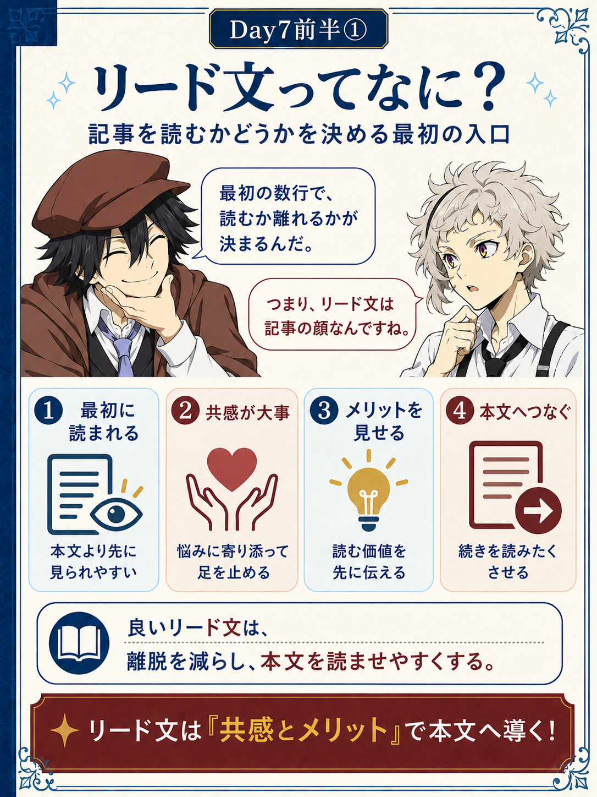
記事を読むか離れるかは、最初の数行で決まりやすい。
読者は記事を開いてすぐ、「自分に必要か」「読む価値があるか」を判断します。本文が良くても、入口で離れられたら読んでもらえません。
江戸川乱歩「本文が立派でも、入口で帰られたら読まれない。最初に“読む理由”を作るんだ。」
中島 敦「つまり、リード文は記事の説明より“この先を読んでください”と案内する場所なんですね。」
まずは2つ： 「共感」と「読むメリット」。初心者はここからで十分です。
Day7前半②
最初のカギは「共感」――読者の悩みを外さない
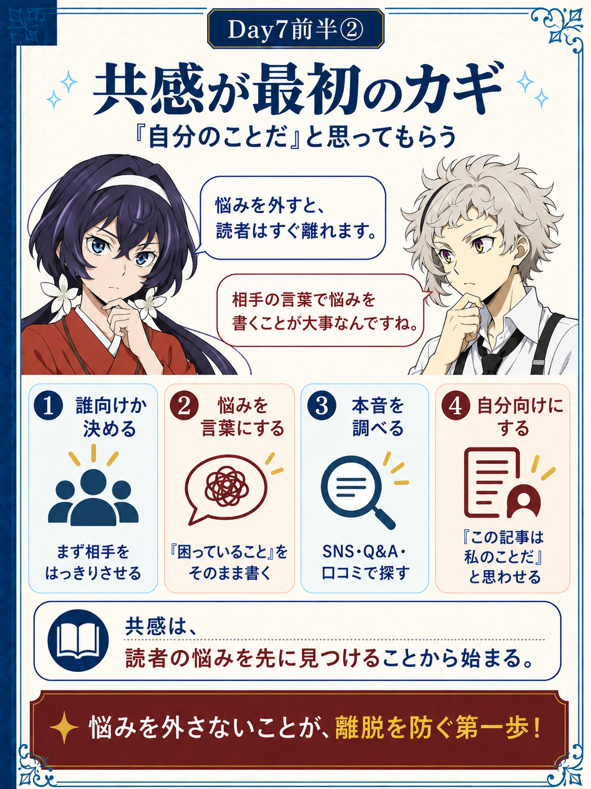
「この記事、自分のためだ」と思ってもらう。
共感は、ただ優しい言葉を書くことではありません。読者が実際に困っていることを、その人が使いそうな言葉で書くことです。
ぼんやり「ブログで悩んでいませんか？」
具体的「情報が多すぎて、何から始めればいいか分からない」
泉 鏡花「悩みを外すと、読者はすぐ離れます。」
中島 敦「相手の言葉で悩みを書くことが大事なんですね。」
Day7前半③
「読むと何が得られるか」を先に見せる
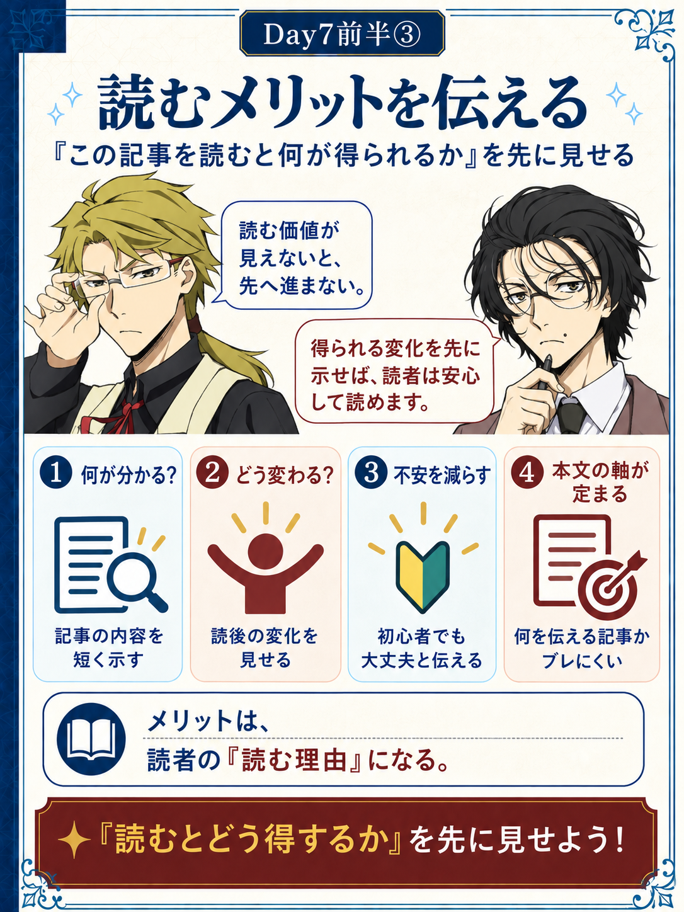
メリットは、読者の「読む理由」になる。
「何について書くか」だけでなく、「読んだあとにどう変わるか」まで伝えます。読者は、自分の悩みが前に進みそうだと感じると読み続けやすくなります。
国木田独歩「読んだ結果、何ができるようになるかまで示せ。」
坂口 安吾「得られる変化が見えれば、読者は安心して先へ進める。」
Day7前半④
迷ったら6つの流れを土台にする
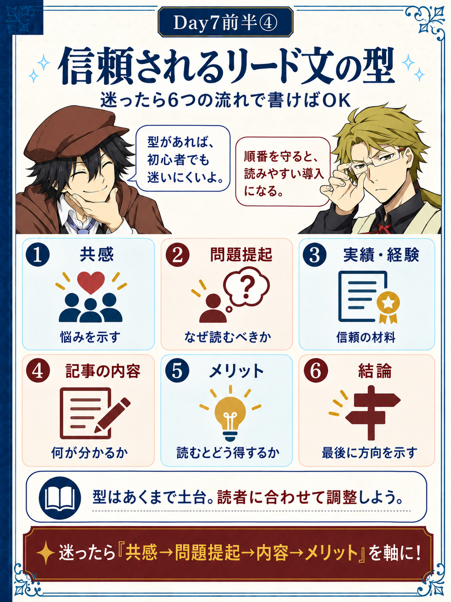
型は、初心者が迷わないための土台。
① 共感読者の悩みを示す
② 問題提起なぜ読む必要がある？
③ 実績・経験必要なら信頼材料を足す
④ 記事の内容何が分かる記事？
⑤ メリット読むとどう得する？
⑥ 結論最後に方向を示す
全部を毎回入れなくてもOK。 まずは共感とメリットを軸にします。
Day7前半⑤ / 実習1
目次から「読者の悩み」を3つだけ選ぶ
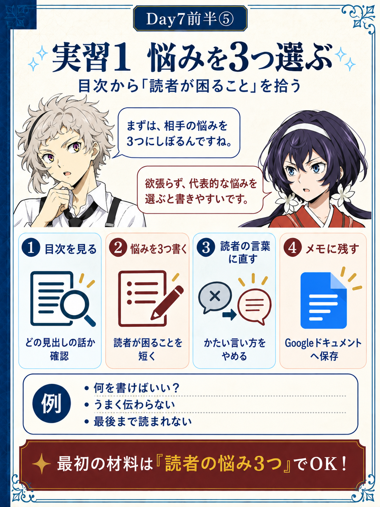
最初の材料は「読者の悩み3つ」でOK。
記事の目次を見て、「この記事を検索する人は何に困っている？」を3つだけ書き出します。最初から文章にしなくて大丈夫です。
例
・何を書けばいいか分からない
・うまく伝わらない
・最後まで読まれない
中島 敦「まず材料を出して、文章はその後でいいんですね。」
泉 鏡花「欲張らず、代表的な悩みを3つで十分。」
Day7前半⑥ / 実習2
「悩み → 共感 → メリット」の順につなぐ
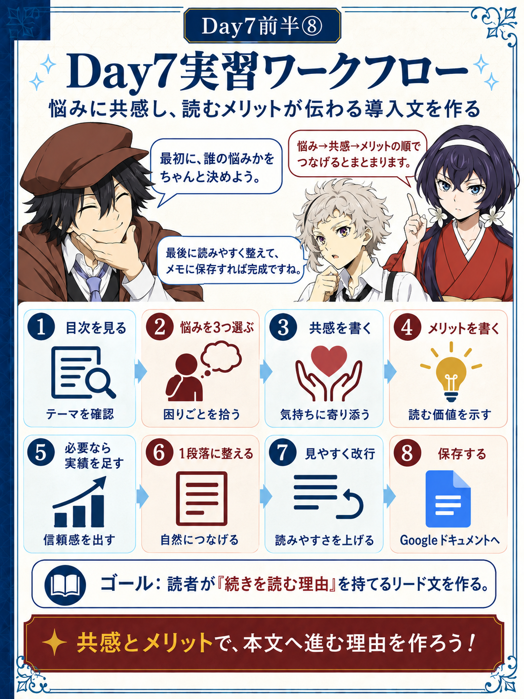
3つを順番に並べるだけで、導入文の骨組みになる。
超シンプルな型
悩み：「何から書けばいいか分からない」
共感：「最初は迷いますよね」
メリット：「この記事では、リード文の作り方を順番に説明します」
坂口 安吾「難しい言い回しはいらない。順番に並べれば形になる。」
江戸川乱歩「最後に自然な文章へ整えればいいよ。」
Day7前半⑦
悩みの深さで、長さと寄り添い方を変える
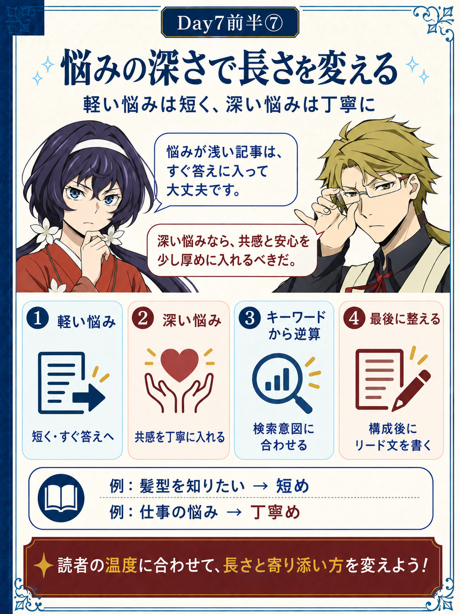
軽い悩みは短く、深い悩みは丁寧に。
軽い悩みすぐ答えに入る。例：髪型を知りたい。
深い悩み共感と安心を少し厚めに。例：仕事の悩み。
泉 鏡花「軽い悩みは、すぐ答えに入って大丈夫です。」
国木田独歩「深い悩みなら、共感と安心を少し厚めに入れるべきだ。」
Day7前半⑧ / まとめ
Day7前半ワークフロー：共感とメリットで本文へ導く
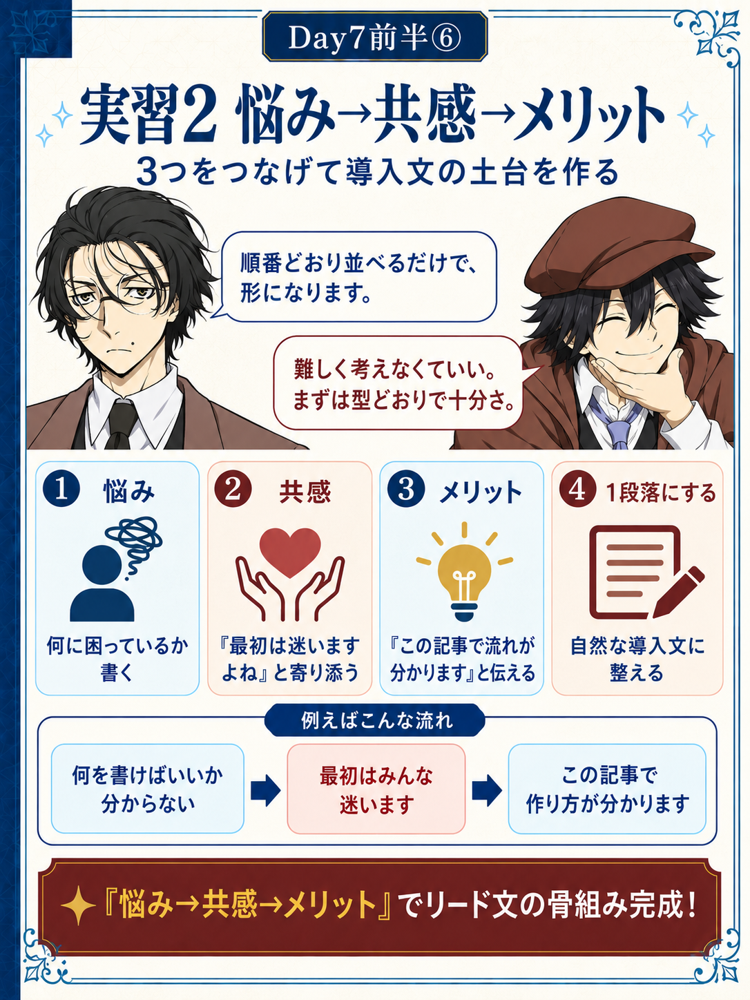
ゴール：読者が「続きを読む理由」を持てるリード文を作る。
1目次を見るテーマ確認
2悩み3つ困りごとを拾う
3共感を書く気持ちに寄り添う
4メリット読む価値を示す
5保存あとで直せる形へ
前半のゴール：
「誰の悩みか」「読むとどうなるか」が分かるリード文の骨組みを作れればOK。
DAY7 後半 / AIで下書き → 自分の言葉で仕上げる
AIにリード文を作ってもらい、体験・根拠・読後の変化を足して仕上げる
後半は、前半の「悩み・共感・メリット」に、根拠・理想の未来・記事内容・行動を加えます。AIに下書きを作らせ、最後は人間が確認して完成させます。
後半で覚えること：
悩み → 共感 → 根拠 → 理想の未来 → 記事内容 → 行動
商品やサービスでは、機能より「使った後にどう変わるか」を中心に伝える。
1悩み誰が困る？
2共感気持ちを代弁
3根拠体験・数字
4未来どう変わる？
5内容何を解説？
6行動先へ進む
Day7後半①
リード文は「続きを読む理由」を作る入口
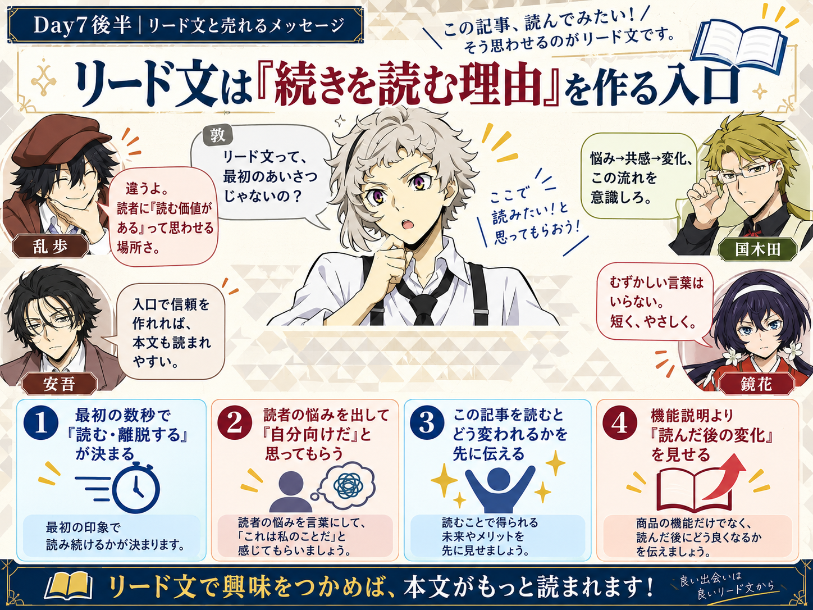
読者に「自分向け」「先に答えがある」と伝える。
リード文は、きれいな挨拶を書く場所ではありません。読者に「この記事は自分のためだ」「この先を読む価値がある」と思ってもらう場所です。
中島 敦「前半では共感とメリットを作りました。後半は、そこに信頼できる材料も足すんですね。」
江戸川乱歩「そう。読者の頭の中に“読む理由”ができれば、本文へ進みやすくなる。」
Day7後半②
「悩み → 共感 → 根拠 → 未来」で信頼を作る
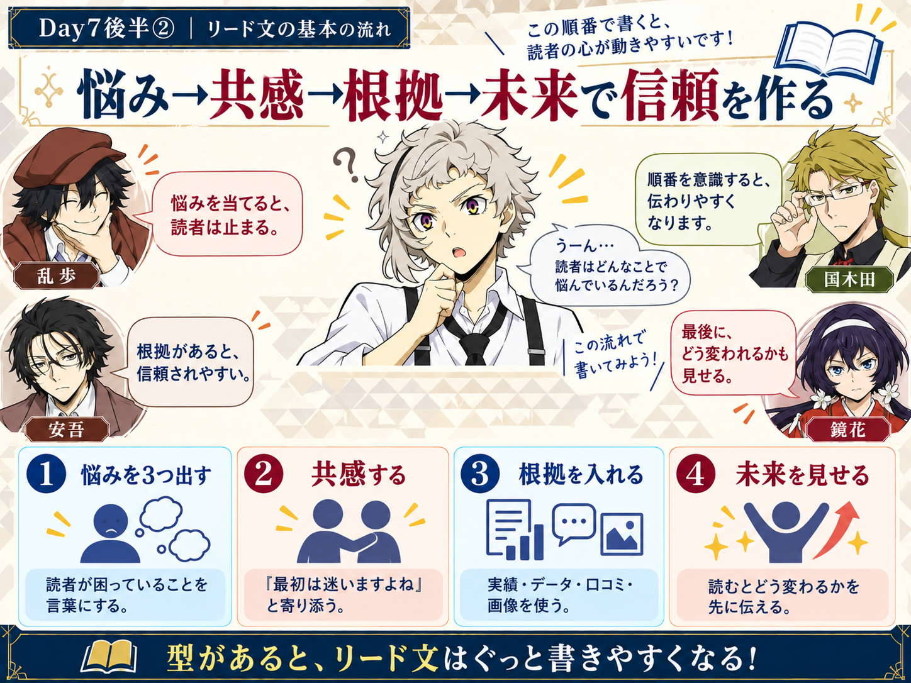
悩みだけで終わらず「こうなれる」まで見せる。
悩み何に困っている？
共感その気持ちを代弁
根拠なぜそう言える？
未来読むとどう良くなる？
国木田独歩「順番を守れば、読者に必要な情報を抜かしにくい。」
泉 鏡花「最後に未来を見せると、安心して読み進められます。」
Day7後半③
「本当かな？」を消すのが根拠の役割
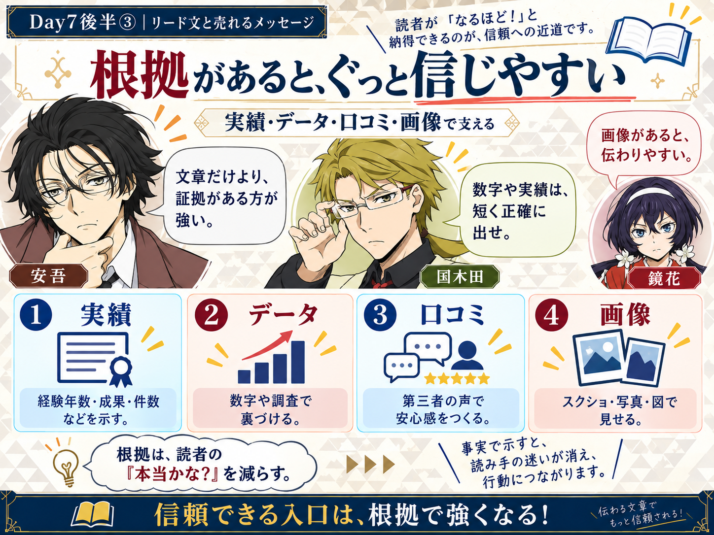
体験・データ・口コミ・画像など、確認できる材料を見せる。
文章だけで「すごいです」と言っても、読者は判断できません。実績・データ・口コミ・写真・スクリーンショットなど、確かめられる材料があると説得力が上がります。
根拠に使えるもの
自分の体験 ／ 調査した数字 ／ 公式情報 ／ お客様の声 ／ 実際の画面・写真
坂口 安吾「“信用してくれ”と頼むより、事実を見せた方が早い。」
中島 敦「自分の体験も、短く入れるだけで記事にしかない情報になりますね。」
Day7後半④
商品を売るなら「機能」より「使った後の変化」
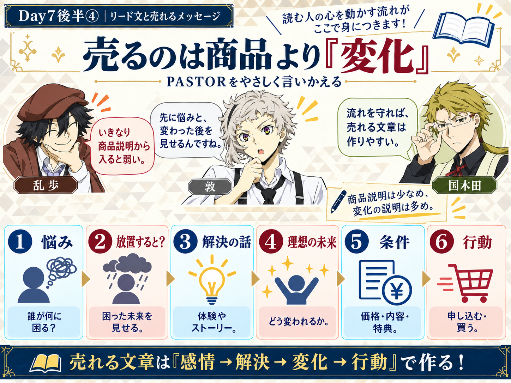
読者が欲しいのは、商品そのものより「使った後の変化」。
商品やサービスを紹介するとき、機能だけを並べても読者には刺さりにくいものです。「使ったら何が楽になる？」「どんな不安が減る？」を伝えます。
P / Problem誰が何に困っている？
A / Amplify放置するとどう困る？
S / Solutionどう解決する？
T / Transformationどう変われる？
O / Offer何が得られる？
R / Response次に何をする？
江戸川乱歩「人は商品より“自分がどう変わるか”を買うんだよ。」
中島 敦「“機能が多い”より“困りごとが減る”の方が分かりやすいです。」
Day7後半⑤ / 実習1
AIにリード文の下書きを作ってもらう
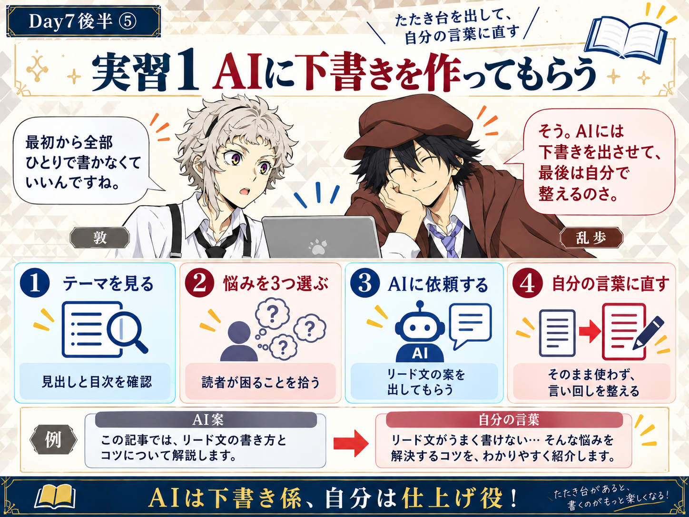
AIは「完成原稿」ではなく「たたき台」を作る係。
前半で選んだ悩み3つ、記事テーマ、読者像をAIへ渡して、まずは下書きを作ります。白紙から全部書く必要はありません。
頼み方の例
「この記事の読者は○○です。悩みは①○○ ②○○ ③○○です。共感・根拠・読後のメリット・記事の要約を入れて、600文字以内のリード文案を作ってください。」
中島 敦「まず形を作って、あとから直すんですね。」
江戸川乱歩「そう。AIは下書き係。完成させるのは君だよ。」
Day7後半⑥ / 実習2
AI文章に「自分しか持っていない材料」を足す
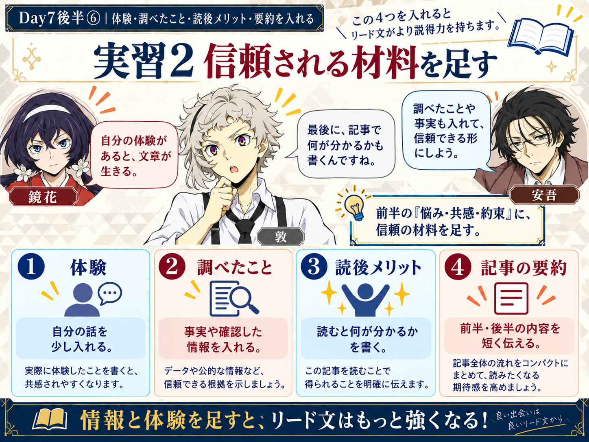
体験・調べたこと・数字を1つ足すだけでも文章が具体化する。
- 本当に体験したことだけを書く
- 調べた数字は元の情報を確認する
- 読後にどう変わるかを自分の言葉で書く
- 記事全体で何を説明するかを短く要約する
坂口 安吾「AIが持っていない材料を入れろ。そこから個性と信頼が生まれる。」
泉 鏡花「作り話の体験は入れない。本当に確認できることだけ。」
Day7後半⑦ / 実習3
事実確認と読みやすさをチェックする
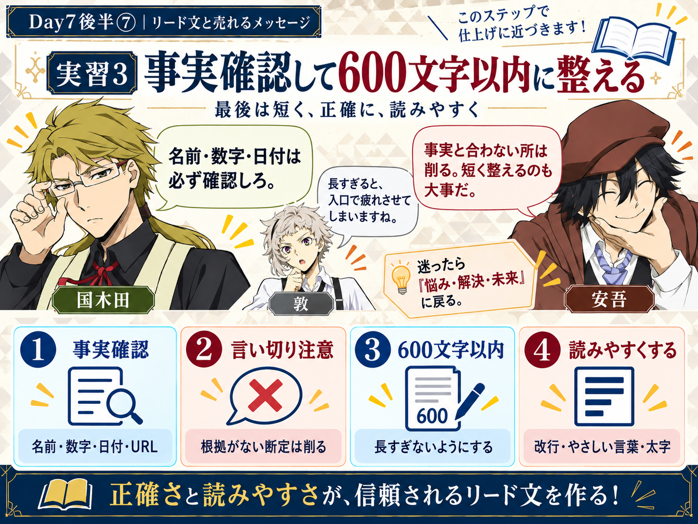
公開前に、正しさと読みやすさの両方を見る。
固有名詞名前は正しい？
数字・日付元データはある？
URL・出典実際に開ける？
断定言い切る根拠はある？
間違っている情報は、文章が上手くても信用を落とします。確認できない情報は削るか、断定を弱めます。
国木田独歩「公開前の確認を怠るな。名前・数字・日付・URLは特にだ。」
中島 敦「読みやすさだけでなく、事実と合っているかも見るんですね。」
Day7後半⑧ / 実習4
最後は「自分の言葉」に直し、600文字以内を目安に整える
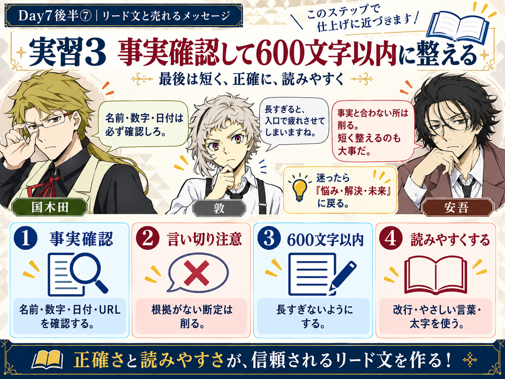
AIの言葉を、そのまま公開しない。
くどい部分を削り、難しい表現をやさしく直し、自分が本当に言える内容だけを残します。600文字以内を目安にすると、スマホでも読みやすい入口にしやすくなります。
中島 敦「AIの文章を少し直すだけでも、自分の文章としてしっくりします。」
坂口 安吾「最後のひと手間でAIっぽさは薄くなる。自分の声に戻せ。」
Day7後半⑨ / 完成
Day7後半ワークフロー：AIで作って、自分の言葉で仕上げる
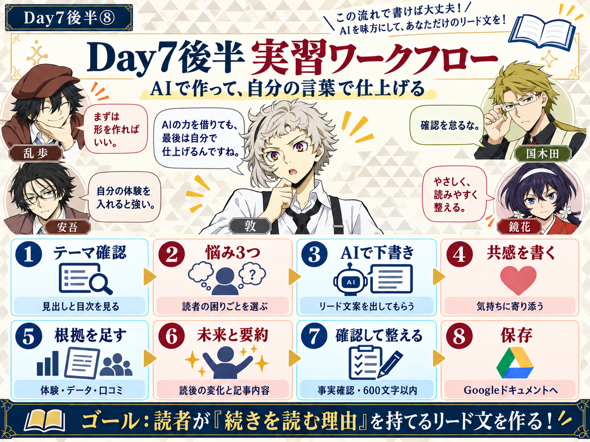
AIは下書き、人間は根拠・判断・仕上げ。
1テーマ誰向け？
2悩み3つ選ぶ
3AI下書き形を作る
4根拠体験を足す
5確認事実を見る
6保存短く整える
後半のゴール：
AIの下書き＋自分の体験・根拠＋読後の未来＋事実確認で、信頼されるリード文を完成させる。
DAY8 前半 / 2026.09.16 / 論理構成
「何を伝えたいか」を先に決め、相手の疑問に順番に答える
伝わる文章や話し方は、センスではなく順番でかなり改善できます。結論・理由・具体例を整理し、根拠を示して、読者が途中で迷わない道を作ります。
今日いちばん覚えること：
PREP法＝結論 → 理由 → 具体例 → 結論。
特にE（具体例）を薄くせず、数字・体験・実際の場面を入れる。
1何を伝える？結論を決める
2なぜ？理由・根拠
3具体的には？例・数字・体験
4ズレ確認最初と最後
5保存本文を増やす
Day8前半①
伝わる文章は「順番」で決まる
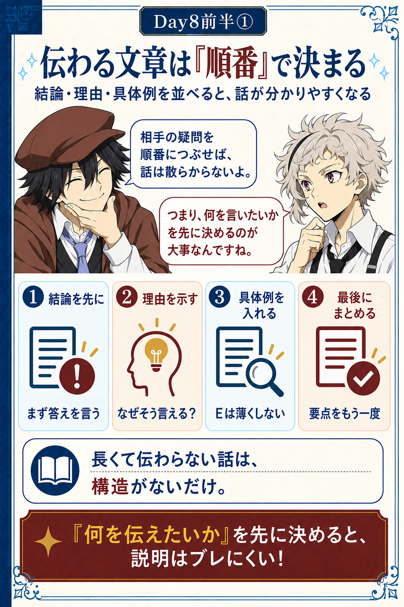
長くて伝わらない話は、情報不足より「構造不足」で起きやすい。
情報をたくさん持っていても、順番がバラバラだと読み手は迷います。まず「何を言いたいのか」を決め、そのあとで理由と具体例を置きます。
P 結論先に答えを言う
R 理由なぜそう言える？
E 具体例数字・体験・事実
P 結論最後にもう一度まとめる
江戸川乱歩「相手の頭に浮かぶ疑問を、順番に消していけばいい。話はそれだけで散らかりにくいよ。」
中島 敦「先に“何を伝えたいか”を決めるだけでも、書きやすくなりそうです。」
Day8前半②
論理のつながりを強くする5つの方法
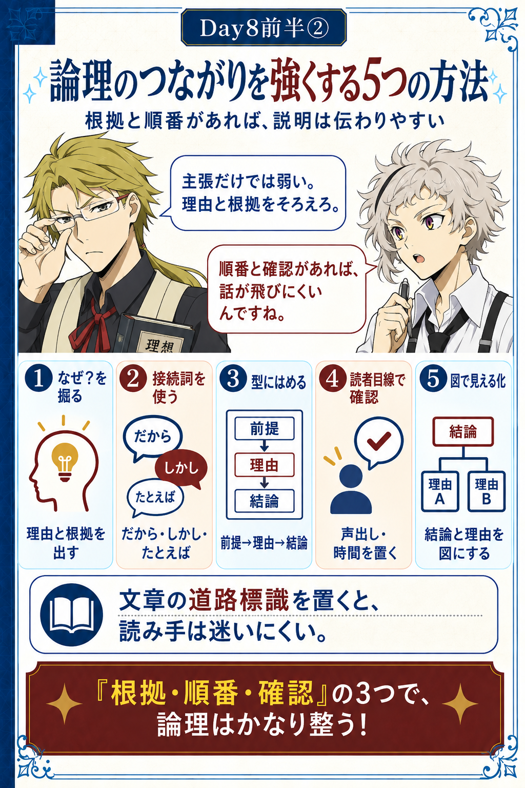
根拠・順番・確認を入れると、話の飛躍を見つけやすい。
① なぜ？理由と根拠を掘る
② 接続詞文章の道路標識
③ 型PREPや前提→理由→結論
④ 読者目線他人のつもりで確認
⑤ 図解ロジックを目で見る
主張だけでは「なぜ？」が残ります。理由・根拠を足し、接続詞で方向を示し、型に当てはめて順番を整えます。最後に読者の目線で読み返すと、説明不足を見つけやすくなります。
国木田独歩「“そう思うから”では根拠にならん。なぜそう言えるかまで書け。」
中島 敦「声に出して読む、時間を置く、他の人に見てもらうのもチェックになるんですね。」
接続詞はつけすぎない。 話の向きが変わる場所だけに置くと読みやすくなります。
Day8前半③
PREP法は「相手の疑問を順番に消す」型
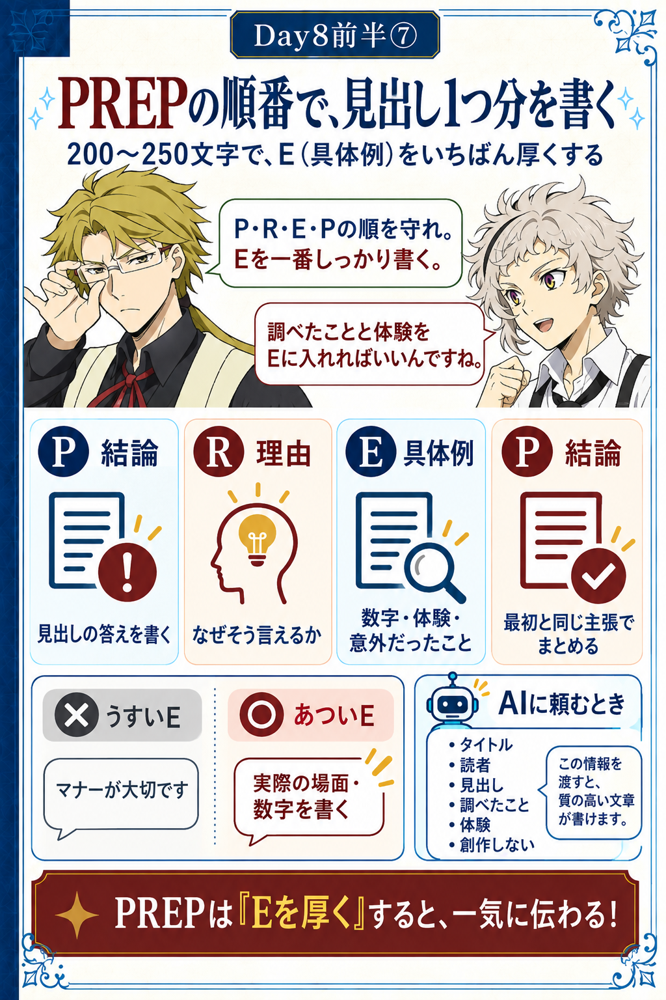
PREPで最も厚くしたいのは、E（具体例）。
P / Point結論。「で、何が言いたい？」に答える
R / Reason理由。「なぜ？」に答える
E / Example具体例。「具体的には？」に答える
P / Point結論を再確認して着地
PとRは短くても大丈夫です。読者が「なるほど」と納得する材料はEに置きます。実際の行動、数字、自分の体験、調べて意外だったことなどを具体的に書きます。
うすいE
「マナーを守ることが大切です。」
あついE
「実際の場所・時間・数字・案内内容」まで書く。
江戸川乱歩「PREPはEの熱量で伝わり方が変わる。具体例を“理由の言い換え”で終わらせないこと。」
中島 敦「最初と最後のPも、同じ主張になっているか確認します。」
Day8前半④
SDS法＋3ポイント法で、短く話す
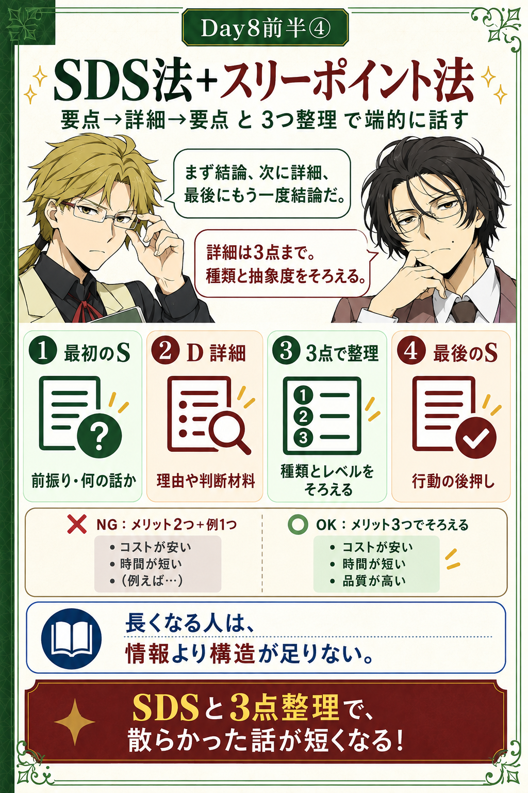
要点 → 詳細 → 要点。詳細は3点程度に絞る。
最初のS / Summary何の話かを先に示す。聞き手の心構えを作る。
D / Detail理由や判断材料。3つ程度に整理する。
最後のS / Summary結論を着地させ、必要なら次の行動を促す。
詳細を3つにする場合は、種類と抽象度をそろえるのがコツです。「メリット2つ＋具体例1つ」のように混ぜると、聞き手が整理しにくくなります。
国木田独歩「3点並べるなら、同じ種類・同じ目線の高さで統一しろ。」
坂口 安吾「型を守ること自体が目的じゃない。相手に伝わるために使うんだ。」
Day8前半⑤ / 実習準備
実習の前に、材料をそろえよう
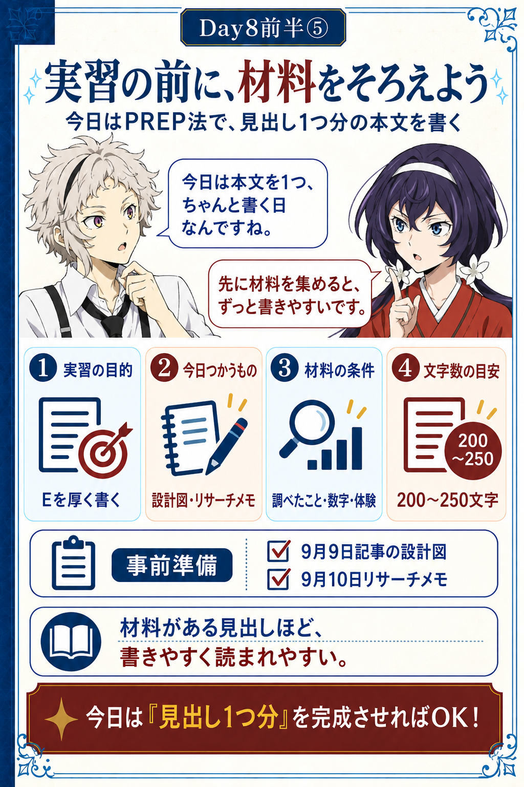
2026/9/16：今日は「見出し1つ分の本文」を完成させる。
9月9日記事の設計図タイトルと目次を確認。まだ書いていない見出しを探す。
9月10日リサーチメモ調べたこと・数字・自分の体験・前回書いた本文を確認。
第6回でも本文を1つ書いています。今日はその続きです。ゼロからテーマを作るのではなく、すでに集めた材料を使って次の見出しを書きます。
泉 鏡花「先に材料を確認すると、本文で止まりにくいです。」
中島 敦「今日のゴールは記事全部ではなく、“見出し1つ分”なんですね。」
Day8前半⑥ / 実習1
今日書く見出しを、1つ決めよう
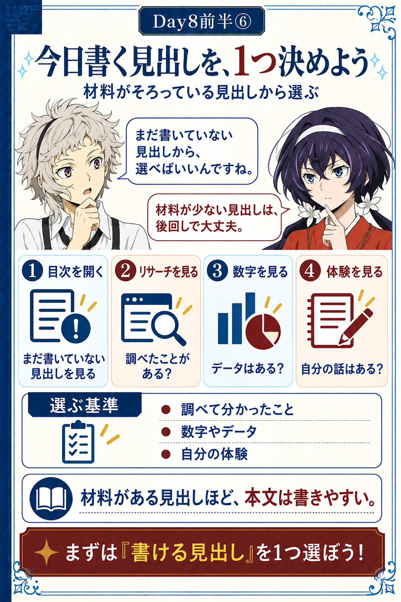
材料がある見出しほど、書きやすく・具体的になりやすい。
「9月9日記事の設計図」の目次を開き、まだ書いていない見出しから1つ選びます。迷ったら、9月10日リサーチメモを見て材料が多いものを選びます。
- 調べて分かったことがある
- 出典を確認できる数字やデータがある
- 自分の体験、または調べて意外だったことがある
材料が少ない見出しは後回しでOK。 書きやすい見出しから本文を増やします。
中島 敦「まだ書いていない中から、“書ける材料があるもの”を選べばいいんですね。」
泉 鏡花「材料がないのに無理に書くと、薄い一般論になりやすいです。」
Day8前半⑦ / 実習2
PREPの順番で、200〜250文字の本文を書く
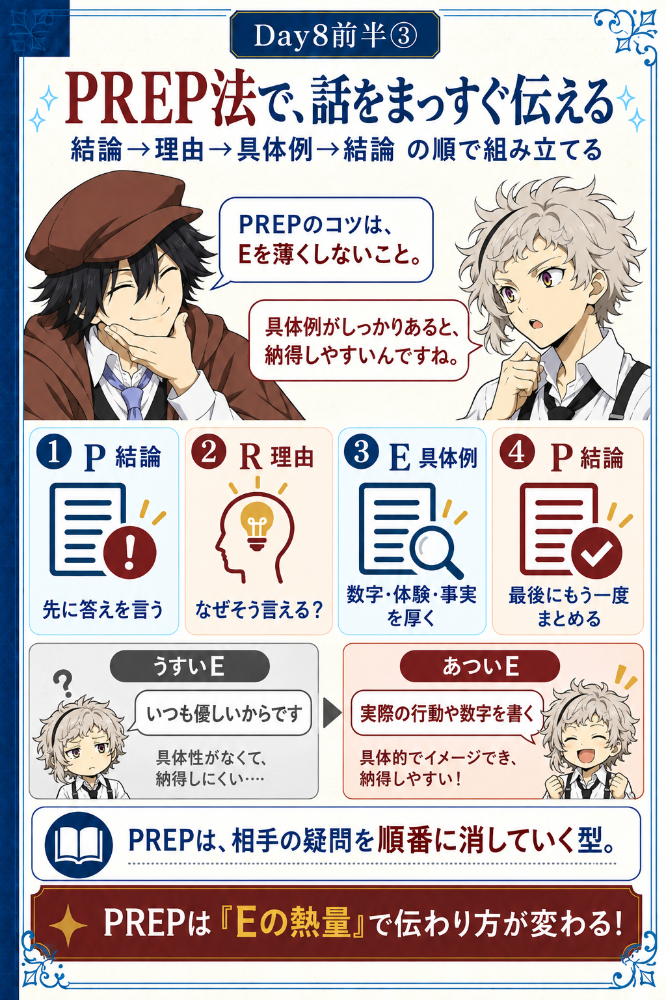
P・R・E・P。E（具体例）をいちばん厚くする。
P 結論見出しの答えを1〜2文
R 理由なぜそう言えるのか
E 具体例例・数字・体験を厚く
P 結論最初と同じ主張で短くまとめる
AIに下書きを頼むときのプロンプト
記事の見出しを1つ分だけ書いてください。全文は書かなくて大丈夫です。
・記事のタイトル：〔タイトル〕
・読者：〔ペルソナ〕
・今回書く見出し：〔見出し〕
・調べて分かったこと：〔リサーチメモから貼る〕
・自分の体験、または調べて意外だったこと：〔リサーチメモから貼る〕
条件
・200〜250文字くらい
・PREP法の順番で書く
（結論 → 理由 → 具体例 → 結論）
・「具体例」の部分を一番厚く書く
・上に書いた「調べて分かったこと」「自分の体験」を必ず使う
・最初の結論と最後の結論は、同じことを言う
・前置きや導入は書かない
・一文は短く、むずかしい言葉は使わない
・書かれていない事実、数字、体験を創作しない
・事実があいまいな部分は、断定せず〈要確認〉と書く
出力
・記事に載せる文章はコードブロックに入れる
・説明を書く場合はコードブロックの外に書く
コードブロック＝AIの回答に出る四角い枠。記事に使う文章だけをコピーしやすくするために使います。
国木田独歩「AIに渡していない数字や体験を作らせるな。曖昧なら〈要確認〉で止めろ。」
中島 敦「Eには、リサーチメモの具体的な材料を入れるんですね。」
Day8前半⑧ / 実習3・4
最初と最後のPを確認して、保存しよう
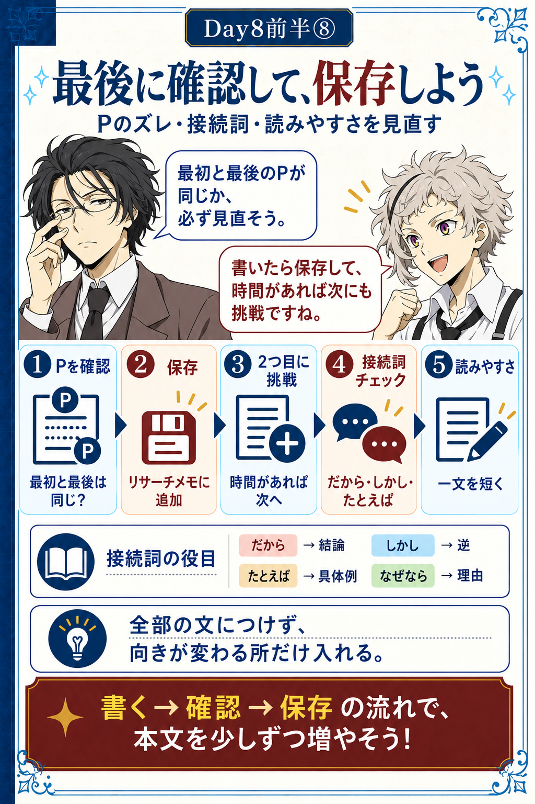
書く → 確認 → 保存。時間があれば次の見出しへ。
① Pのズレ最初と最後が同じ主張？
② Eの厚さ具体的な場面や数字がある？
③ 読みやすさ一文が長すぎない？
④ 保存リサーチメモへ追加
PREPの最初と最後で違うことを言うと、「結局何が言いたいの？」となります。最後に結論のズレを確認し、「9月10日リサーチメモ」の本文の続きを保存します。
だから・したがって結論へ
しかし・ところが逆方向へ
たとえば・実際に具体例へ
なぜなら理由へ
接続詞は全部の文につけない。 話の方向が変わるところだけ使います。時間があれば、次の見出しでも同じ手順を繰り返します。
坂口 安吾「書いた本人は頭の中で補完しちまう。最後は読者になったつもりで疑え。」
中島 敦「結論、理由、具体例が自然につながっていれば完成ですね。」
江戸川乱歩「そう。文章を長くするんじゃない。“疑問を順番に消す”んだ。」
Day8前半のゴール：
材料がある見出しを1つ選び、PREP法で200〜250文字を書き、具体例を厚くして保存する。
DAY8 後半 / 読みやすさ・見た目・推敲
「良い内容」だけでは足りない。読者が読みやすい形に整えて届ける
Webの読者は、最初から一字一句じっくり読むとは限りません。だからこそ、短い文・短い段落・結論ファースト・流し読みしやすい見た目を意識して整えます。
今日いちばん覚えること：
1文60文字以内・1段落150文字以内・同じ文末は2回まで・漢字3割／ひらがな7割。
最後に音読とスマホ表示でチェックする。
1短くする1文60字
2区切る1段落150字
3リズム文末2回まで
4見た目文字だけにしない
5音読耳で確認
6スマホ画面で確認
Day8後半①
読みやすいWeb記事は「見た目」から始まる
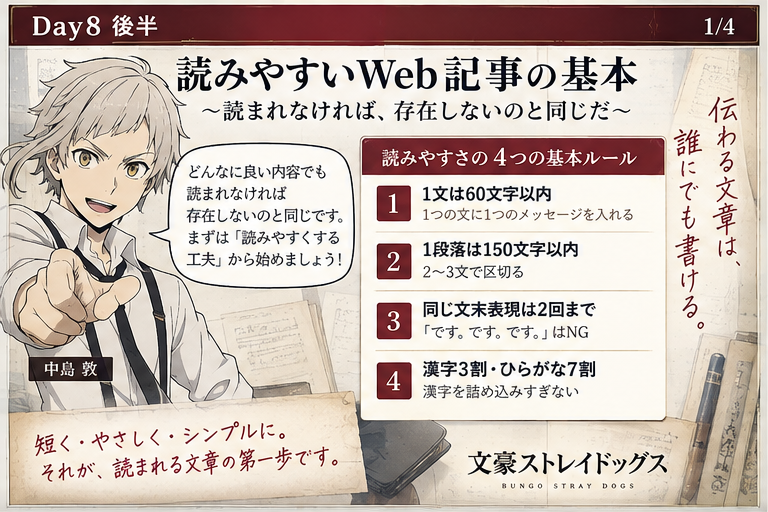
どれだけ良い内容でも、読まれなければ届かない。
Web記事は、紙の本のように最初から最後まで読まれるとは限りません。多くの読者は流し読みをしながら、必要な情報だけを拾います。
中島 敦「内容が良くても、文字がぎっしりだと読む前に疲れてしまうんですね。」
江戸川乱歩「そう。まず“読めそう”と思わせる。中身を届ける前に、入口を軽くするんだ。」
初心者はまず： 長い文を切る・長い段落を分ける・見出しや箇条書きを入れる。この3つからでOK。
Day8後半②
読みやすさを作る4つの基本ルール
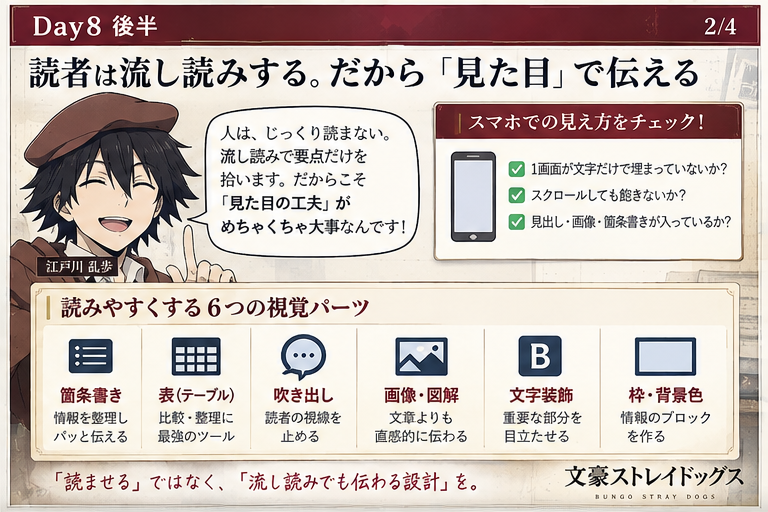
文章の中身だけでなく、画面の「重さ」も減らす。
① 1文60文字以内1文1メッセージ
② 1段落150文字以内2〜3文で区切る
③ 同じ文末は2回までリズムを変える
④ 漢字3：ひらがな7黒い画面を避ける
これは絶対的な法律ではなく、読みやすくするための目安です。数字に縛られすぎて書けなくなるより、まず完成させて最後に直します。
国木田 独歩「1文に情報を詰め込みすぎるな。長ければ句点で切れ。」
坂口 安吾「“です。です。です。”が続くと機械っぽくなる。語尾にも呼吸を入れろ。」
Day8後半③
流し読みでも伝わる「6つの視覚パーツ」
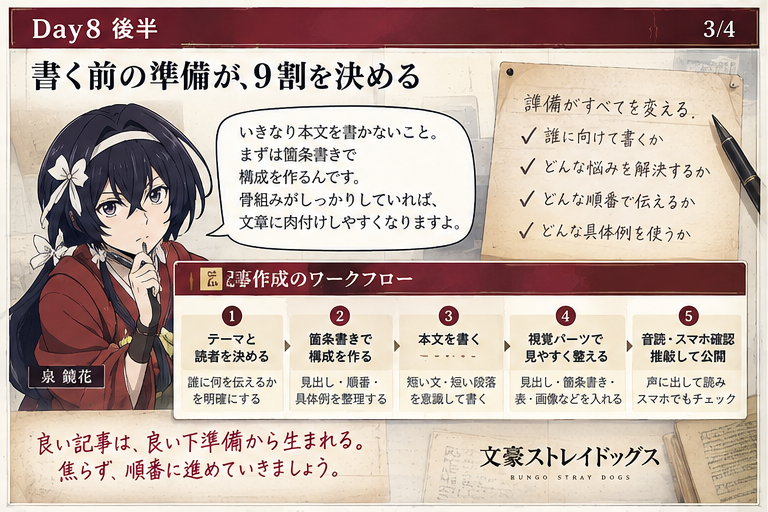
文字だけが続かないように、情報を「見える形」にする。
見出し何の話か一瞬で分かる
箇条書き3つ以上の情報を整理
表比較や横並びを短く見せる
吹き出し重要な補足を50文字程度で
画像・図解文字では分かりにくい情報を視覚化
太字・枠重要な場所だけ目立たせる
装飾しすぎもNG。 色やマーカーを増やしすぎると、どこが重要なのか逆に分からなくなります。
泉 鏡花「スマホで見たとき、画面全部が文字だと重く見えます。」
中島 敦「見出しや箇条書きがあるだけでも、どこを読めばいいか分かりやすいですね。」
Day8後半④
本文を書く前に骨組み、書いた後に音読・推敲
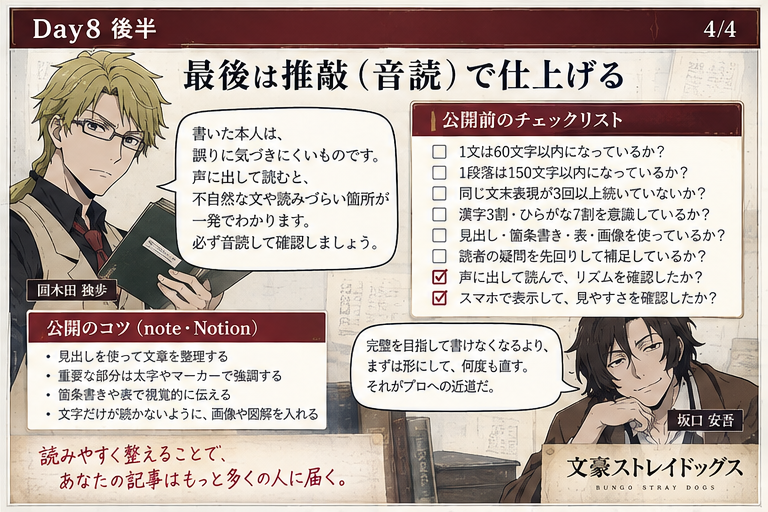
準備 → 執筆 → 見た目 → 音読 → スマホ確認。
いきなり本文を書き始めるより、先に箇条書きで「何を・どの順で・どの具体例を使うか」を決めます。書き終わったら、声に出して読んで不自然な場所を探します。
国木田 独歩「書く前に骨組みを作れ。推敲は手抜きではなく、完成させる作業だ。」
江戸川乱歩「声に出すと、長い文や変なリズムはすぐバレるよ。」
Day8後半⑤ / 実習1
これまで書いた本文を、まず1つ選んで見直す
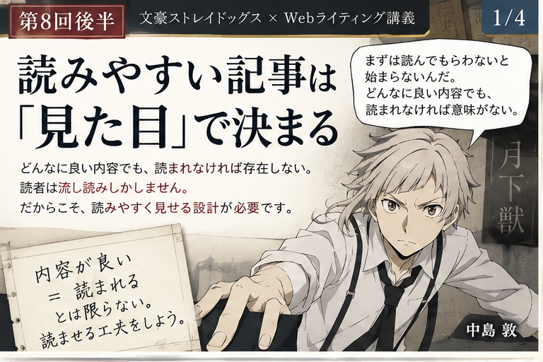
新しく書く実習ではなく、「すでに書いた文章」を整える。
第8回前半までに書いた見出し1つ分の本文を開きます。今日は内容を増やすより、読者が読みやすい形に直すことが目的です。
1文長すぎない？
1段落文字の塊になってない？
文末同じ語尾が続いてない？
漢字黒く見えすぎない？
中島 敦「新しい文章を書くのではなく、前に書いた文章を直すんですね。」
泉 鏡花「直す練習も、書く力です。」
Day8後半⑥ / 実習2
4つの基準で、文章を短く・軽くする
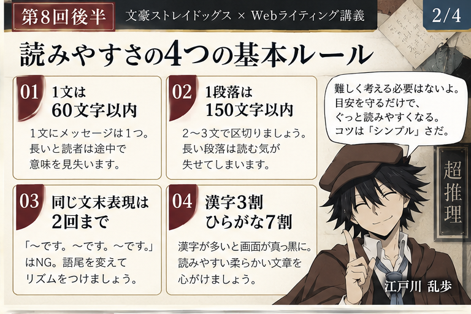
数字は「目安」。読みづらい場所を見つけるために使う。
- 1文が長ければ、読点ではなく句点で分ける
- 1段落が長ければ、2〜3文ごとに区切る
- 「です」「ます」が3回続いたら、語尾を変える
- 「事・為・全て」などを「こと・ため・すべて」に開く
完璧に数えなくてもOK。 画面を見て「重い」「長い」と感じた場所から直します。
坂口 安吾「ルールのために文章を書くな。読者が楽になるために使え。」
中島 敦「数字は採点ではなく、直す場所を見つける目安なんですね。」
Day8後半⑦ / 実習3
note・Notionで「文字だけの画面」を壊す
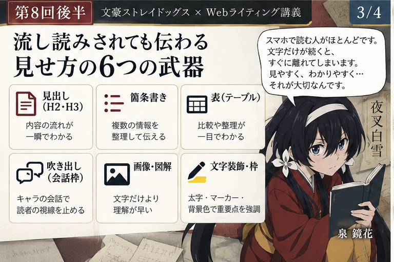
スマホ1画面が文字だけで埋まらないようにする。
見出し話題の区切りを作る
箇条書き複数情報をまとめる
表比較を一目で見せる
吹き出し短い補足・会話
画像・図解視線を止める
太字・背景重要部だけ強調
noteやNotionの装飾は、派手にするためではなく、情報の塊を分けるために使います。見出し直下に図解を置くなど、読む場所を分かりやすくします。
江戸川乱歩「流し読みされるなら、流し読みでも要点が拾える形にすればいい。」
中島 敦「文章を読まなくても、見出しや図解だけで全体が分かるのが理想ですね。」
Day8後半⑧ / 仕上げ
音読 → スマホ表示 → 最後に保存
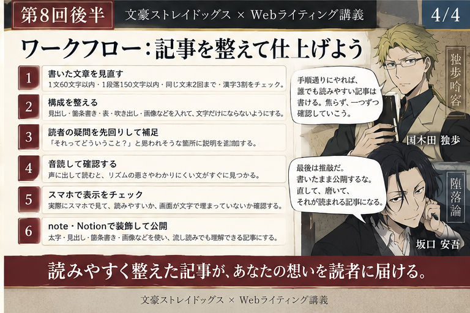
書きっぱなしにせず、耳と画面で仕上げる。
1文章を開く前回の本文
2短くする文・段落
3整える語尾・漢字
4装飾見出し・図解
5音読耳で確認
6スマホ表示確認
最後の確認：
声に出して息継ぎしづらい文は長すぎる可能性があります。スマホで「文字だけの画面」が続くなら、見出し・箇条書き・画像・図解などで区切ります。
国木田 独歩「公開前に音読しろ。目で気づけない違和感を、耳が拾う。」
中島 敦「最後はスマホで見て、読みやすければ保存して完成ですね。」
江戸川乱歩「完璧を待たない。まず形にして、直して、届ける。それが一番早いよ。」
Day8後半のゴール：
これまで書いた文章を、短い文・短い段落・読みやすい見た目に整え、音読とスマホ表示で確認して保存する。
DAY9 前半 / テクニカルSEO＋本文完成
Googleが「見つける・理解する・表示する」ための土台を知ろう
テクニカルSEOは、難しい裏技ではありません。Googleがページを見つけやすく、内容を理解しやすく、検索結果へ出しやすいように、サイト内部の基本を整える考え方です。
今日いちばん覚えること：
クロール → インデックス → 表示。
そして、細かい設定より「検索意図に合った良い記事」を優先する。
1見つけるクロール
2理解するインデックス
3表示する検索結果
4本文完成PREPで書く
5ズレ確認リード文と本文
Day9前半①
テクニカルSEOは「Googleに伝わる土台づくり」
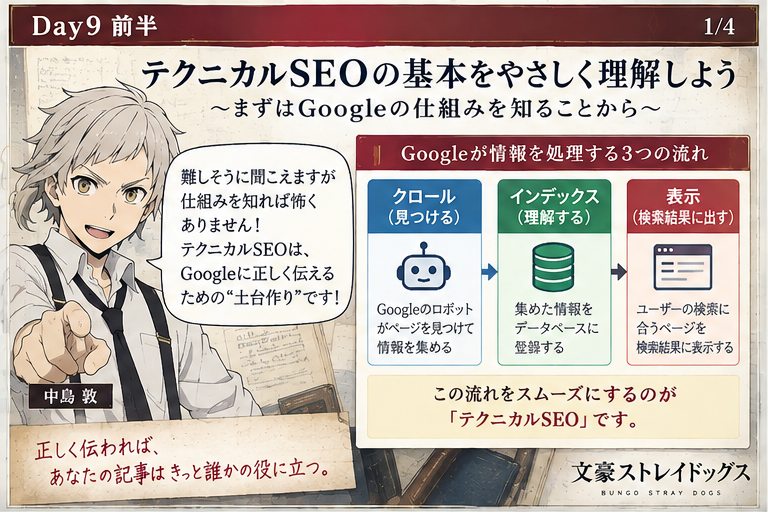
まずはGoogleがページをどう処理するかを知る。
どれだけ良い記事でも、Googleがページを見つけられず、内容を理解できなければ検索結果には出にくくなります。テクニカルSEOは、その「伝わるための土台」を整える作業です。
中島 敦「難しい設定を全部覚えるより、まず仕組みを理解するんですね。」
江戸川乱歩「そう。全部を完璧にやる必要はない。重要なところから順に押さえればいいよ。」
最優先はコンテンツ。 テクニカルSEOは「良い記事を正しく届けるための土台」です。
Day9前半②
Googleの基本は「クロール → インデックス → 表示」
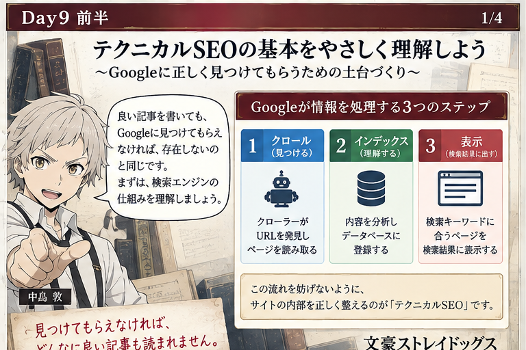
ページが検索結果へ出るまでの3ステップ。
① クロールGoogleのロボットがURLを見つけ、ページを読む。
② インデックス内容を理解し、検索用のデータベースに登録する。
③ 表示検索した人に合うページを検索結果へ出す。
国木田 独歩「まず見つけてもらい、次に理解してもらう。順番を飛ばすな。」
中島 敦「内部リンクやURLも、見つけてもらう助けになるんですね。」
Day9前半③
テクニカルSEOの主要ポイントを、全部ではなく「重要順」で覚える
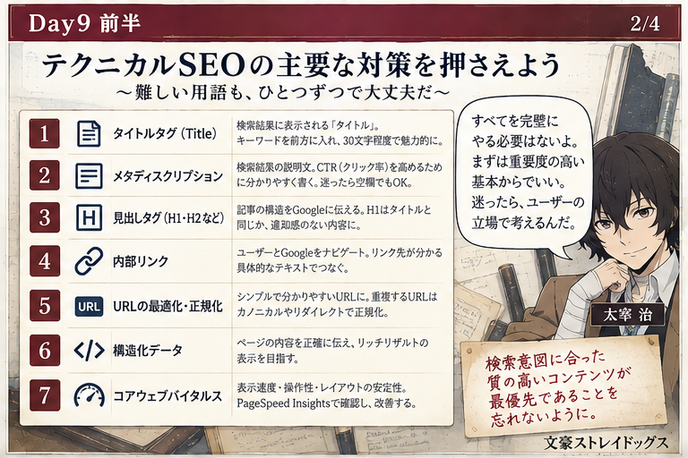
まずはタイトル・見出し・内部リンク・URL・表示速度から。
タイトルタグ検索結果で見えるタイトル。キーワードを自然に入れる。
メタディスクリプション検索結果の説明文。必要なら設定する。
HタグH1・H2などで記事の構造を伝える。
内部リンク関連ページへ案内し、ページを見つけやすくする。
URL・正規化シンプルで意味が分かるURLにする。
構造化データ・表示速度検索結果の見え方や使いやすさを改善する。
坂口 安吾「細かい設定にハマる前に、基本をちゃんとやれ。それで十分強い。」
泉 鏡花「読者に分かりやすい構造は、Googleにも分かりやすいです。」
Day9前半④
まず整えるのは「タイトル・Hタグ・内部リンク・URL・スマホ表示」
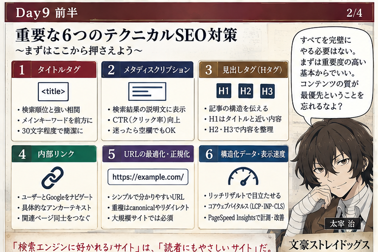
初心者は、重要度の高い基本からでOK。
タイトル内容が分かる？キーワードは自然？
H1・H2記事構造が見える？
内部リンクリンク先が言葉で分かる？
URL短く意味が通る？
スマホ表示遅くない？崩れてない？
構造化データ必要なページだけ正しく使う
重複URL必要ならcanonical等で整理
コンテンツ検索意図にちゃんと答えている？
迷ったら： 細かいテクニックより、Google公式のSEOガイドやベストプラクティスを基準に考えます。
江戸川乱歩「“全部やる”じゃなく、“必要なところを正しくやる”。それで十分だよ。」
中島 敦「まずタイトル・H1・URL・内部リンク・表示速度ですね。」
Day9前半⑤ / 実習1
まだ書いていない見出しを確認しよう
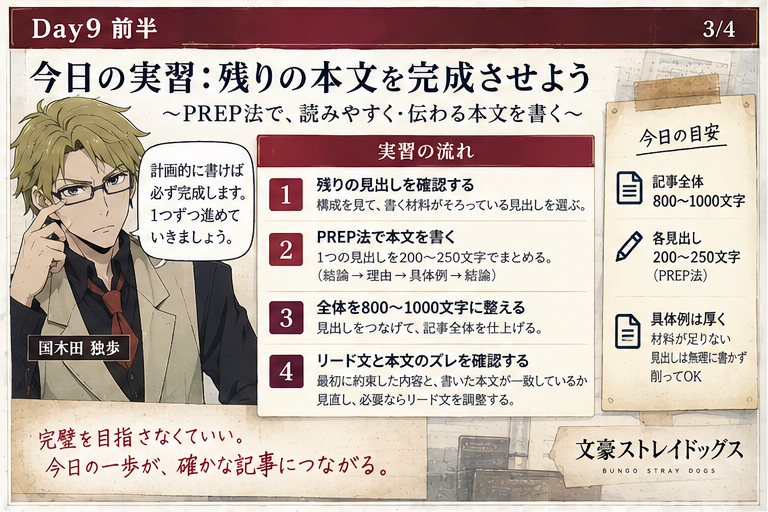
今日は「記事を完成させる」ための続きの実習。
第8回までに書いた記事を開き、まだ本文がないH2・H3を確認します。材料がある見出しから書き、材料が不足している見出しは無理に残さなくて大丈夫です。
- 調べた材料がある見出しを優先する
- 1見出し200〜250文字を目安にする
- 具体例が足りない見出しは、調べ直すか削る
泉 鏡花「材料がない見出しを無理に書くと、薄い文章になります。」
中島 敦「書かない判断も、記事を整える作業なんですね。」
Day9前半⑥ / 実習2
PREP法で、残りの本文を書き進める
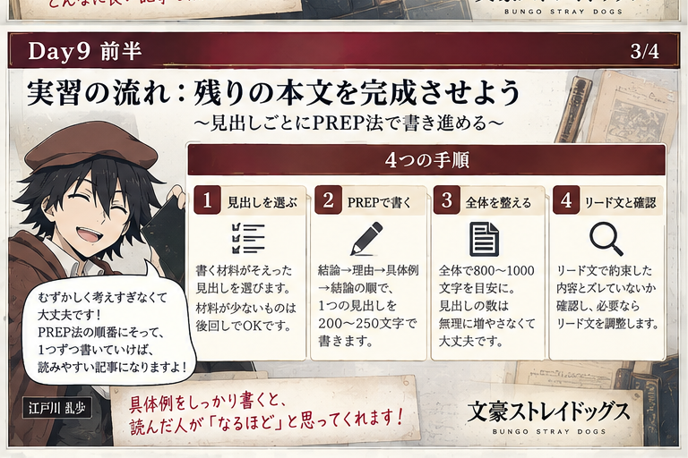
結論 → 理由 → 具体例 → 結論。具体例を厚くする。
P 結論この見出しの答え
R 理由なぜそう言える？
E 具体例数字・体験・調査結果
P 結論最後に短くまとめる
第8回前半と同じ型でOKです。特にE（具体例）に、リサーチメモの数字・体験・実際に調べた内容を入れます。
目安： 1見出し200〜250文字。PとRは短く、Eをいちばん具体的に。
国木田 独歩「型はもう覚えたはずだ。今度は最後まで完成させることに集中しろ。」
江戸川乱歩「Eが薄ければ“具体的には？”と自分に聞けばいい。」
Day9前半⑦ / 実習3
記事全体を800〜1000文字の目安に整える
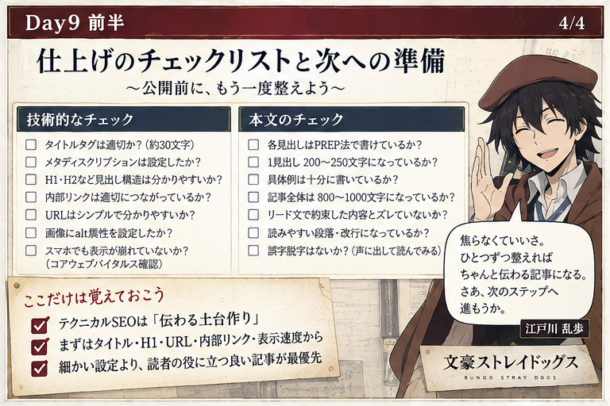
長さより、必要な情報がそろっているかを優先する。
文字数全体800〜1000文字が目安
見出しH2・H3が自然に並ぶ？
具体例Eが薄くない？
重複同じ話を繰り返してない？
800〜1000文字は「絶対のノルマ」ではありません。検索した人の疑問に答えるために必要な内容がそろっていればOKです。不要な見出しを増やして水増ししないようにします。
大事： 文字数を増やすために、根拠のない説明や同じ話を足さない。
Day9前半⑧ / 実習4
最後に「リード文の約束」と本文が合っているか確認する
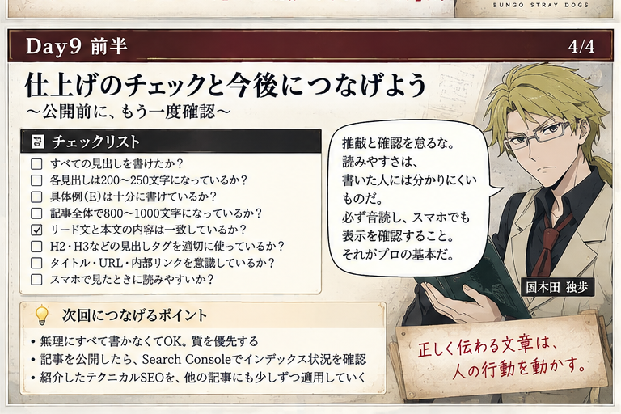
リード文で約束したことを、本文でちゃんと答えているかを見る。
記事を書き進めると、最初に作ったリード文と本文が少しズレることがあります。本文を無理にリード文へ合わせるのではなく、必要ならリード文を修正します。
1見出し確認残りはある？
2PREP200〜250字
3全体800〜1000字
4ズレ確認リード文と本文
5保存記事完成
坂口 安吾「本文が変わったなら、リード文も変えればいい。最初の文章に縛られるな。」
中島 敦「記事全体を読んで、最初の約束と中身が合っていれば完成ですね。」
江戸川乱歩「そう。SEOの設定より先に、“読者の疑問に答え切ったか”を確認しよう。」
Day9前半のゴール：
H2・H3で構造を整え、残りの本文をPREPで書き、800〜1000文字を目安に記事を完成。最後にリード文とのズレを直す。
DAY9 後半 / 見出し・内部リンク・仕上げ
見出しとリンクを整えて、記事を「読まれる形」に仕上げよう
Day9後半では、記事のまとめを書き、見出し・参考リンク・内部リンク・文章全体を点検して完成させます。難しく考えすぎず、「読者にとって分かりやすいか」を軸に整えていけば大丈夫です。
今日いちばん覚えること：
見出しは記事の地図、内部リンクは次の道案内。
AIは案出し役。最後の判断は、人間が「自然で分かりやすいか」で決める。
1見出し中身が伝わる
2リンク役割で使い分ける
3内部リンク関連ページをつなぐ
4AI活用候補を出してもらう
5仕上げ全体を整えて完成
Day9後半①
見出しは、読者にもGoogleにも必要な「道しるべ」
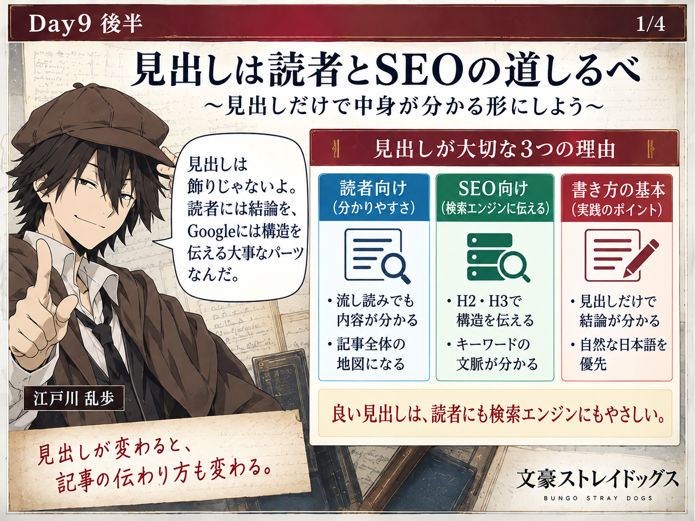
見出しは飾りではなく、内容を先に伝える大事な案内板。
読者は、見出しを流し読みしながら「この先を読む価値があるか」を判断します。検索エンジンも、H2・H3などの見出しを見て記事の構造を理解します。だから見出しは、本文と同じくらい大切です。
中島 敦「見出しだけでも、大体の中身が分かるようにしておくんですね。」
江戸川 乱歩「そう。読者には結論を、Googleには構造を渡す。見出しはそのための入口だよ。」
基本： 見出しは「内容が分かる」「自然な日本語」「流れが見える」の3つを意識します。
Day9後半②
見出し設計 5つの鉄則をやさしく押さえる
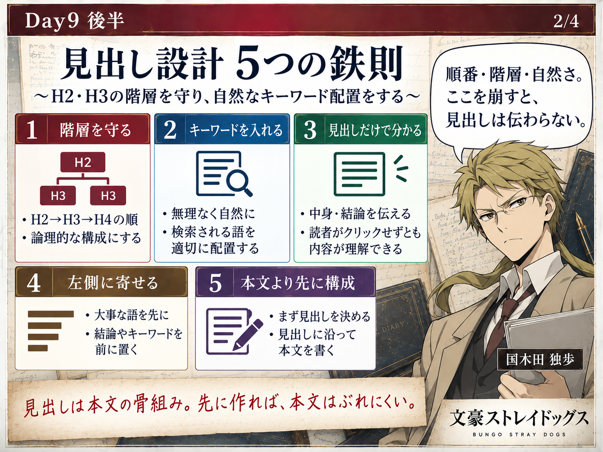
階層・自然さ・キーワード配置。この3点が崩れると見出しは弱くなる。
① 階層を守るH2の下にH3を置き、順番を飛ばしません。
② キーワードを入れる無理のない範囲で、検索される言葉を含めます。
③ 見出しだけで分かる抽象語だけで終わらず、結論が伝わる形にします。
④ 左に寄せる大事な語や結論は、できるだけ前に置きます。
⑤ 本文より先に構成いきなり本文ではなく、先に見出しを作ります。
国木田 独歩「順番・階層・自然さ。この3つを崩すな。」
中島 敦「見出しを先に作れば、本文もぶれにくくなるんですね。」
Day9後半③
リンクは全部同じにしない。役割で使い分ける
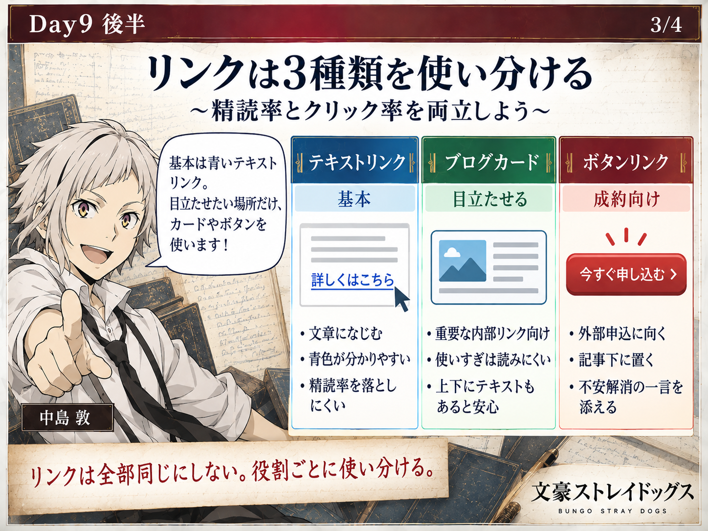
精読率とクリック率を両立させるには、リンクの役割分担が大切。
テキストリンク基本形。本文になじみ、流れを壊しにくい。青色が分かりやすい。
ブログカード目立たせたい内部リンク向け。使いすぎると読みづらくなるので注意。
ボタンリンク申し込みや外部誘導向け。記事下に置くと行動してもらいやすい。
覚え方： 普段はテキストリンク、目立たせたい内部リンクはブログカード、行動してほしい外部リンクはボタンリンク。
中島 敦「基本は青いテキストリンクで、特別な場所だけカードやボタンを使うんですね。」
江戸川 乱歩「うん。全部を派手にすると、逆にどこが大事か分からなくなるからね。」
Day9後半④
内部リンクとAI活用のコツを、初心者向けに整理する
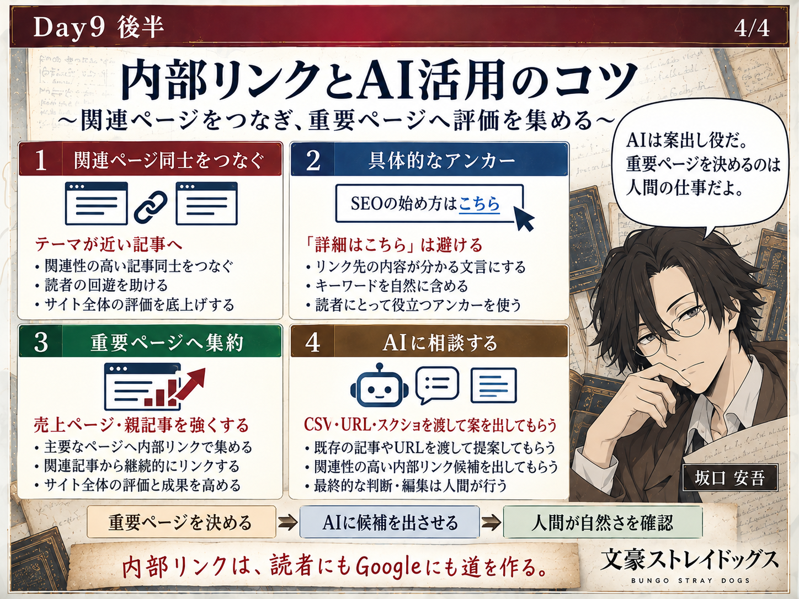
関連ページをつなぎ、重要ページへ評価を集める。AIは案出し役。
- 関連性の高いページ同士をつなぐ
- 「詳細はこちら」ではなく、内容が分かる言葉でリンクする
- 重要なページへ、意図的に内部リンクを集める
- AIにはCSV・URL・スクショを渡し、候補を出してもらう
- 最終判断は「読者に自然で分かりやすいか」で人間が決める
AI活用のコツ： まず人間が「どのページを強くしたいか」を決めてから、AIに相談します。
坂口 安吾「AIは案出し役。重要ページを決めるのは人間の仕事だ。」
国木田 独歩「判断基準は、SEOだけでなく読者の分かりやすさだな。」
Day9後半⑤ / 実習1
Day9後半の実習は「まとめ・見出し・リンク・全体確認」の4本柱
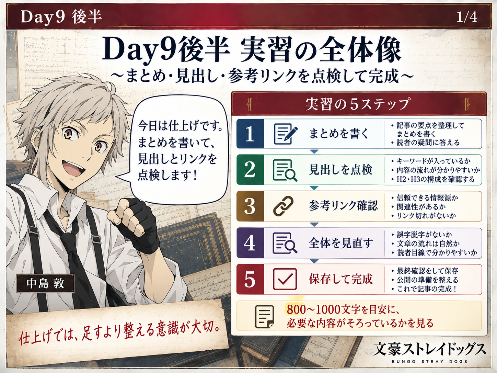
今日は足すより整える。最後の仕上げを順番に進める。
1まとめ要点を整理
2見出し構造を確認
3リンク参考リンク確認
4全体読みにくさ修正
5保存完成させる
第9回後半は、記事のまとめを書き、見出し・参考リンク・文章全体を点検して完成させる実習です。800〜1000文字を目安にしつつ、必要な内容がそろっているかを優先して見ます。
Day9後半⑥ / 実習2
見出しを点検するときは「4チェック」で十分
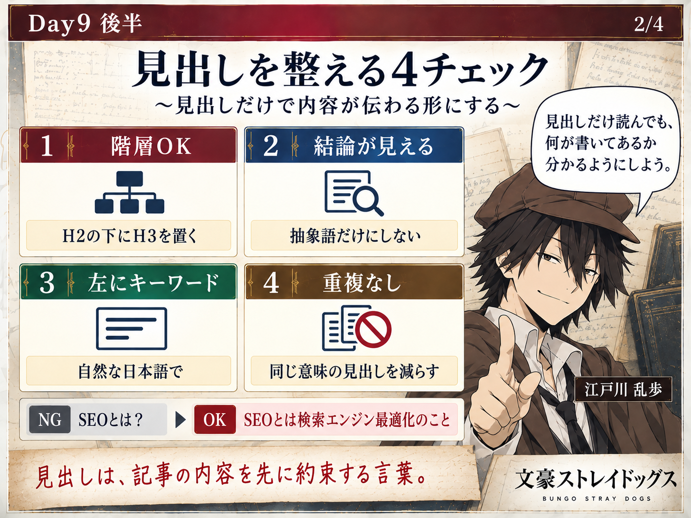
見出しだけ読んでも中身が伝わるかを確認する。
階層OKH2の下にH3を置けている？
結論が見える抽象語だけで終わっていない？
左にキーワード大事な語が前にある？
重複なし似た見出しが並びすぎていない？
江戸川 乱歩「見出しだけ読んでも、何が書いてあるか分かる形にしよう。」
中島 敦「“SEOとは？”より“SEOとは検索エンジン最適化のこと”の方が親切ですね。」
Day9後半⑦ / 実習3
参考リンクと内部リンクは「自然に次の情報へ導く」ために使う
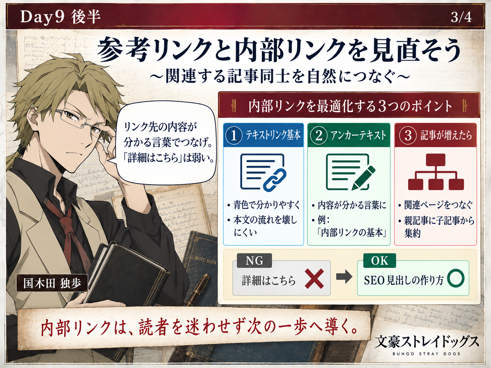
リンクは、読者を迷わせず次の一歩へ導く。
- リンク切れがないか確認する
- 信頼できる情報源を選ぶ
- 関連性の高い記事同士をつなぐ
- 「詳細はこちら」より、リンク先の内容が分かる言葉にする
例： 「詳細はこちら」より「SEO見出しの作り方」の方が、読者にもGoogleにも伝わりやすい。
国木田 独歩「リンク先の内容が分かる言葉でつなげ。」
坂口 安吾「記事が増えたら、関連ページを内部リンクでつなぐのがSEOにも効いてくる。」
Day9後半⑧ / 実習4
最後は重複・読みにくさ・文字数を確認して完成
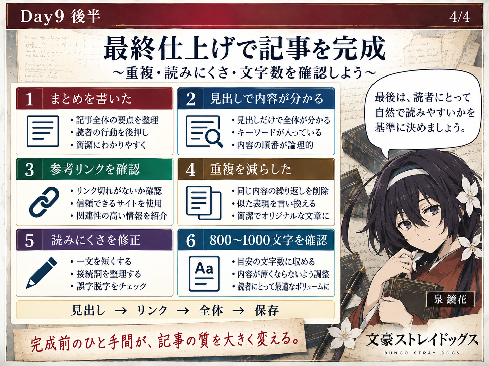
完成前のひと手間が、記事の質を大きく変える。
まとめ記事の要点が整理されている？
見出し見出しだけで内容が分かる？
リンク参考リンク・内部リンクは自然？
重複同じ話が繰り返されていない？
読みにくさ一文が長すぎない？
文字数800〜1000文字を目安に調整した？
自然さ読者目線で分かりやすい？
保存最後に記事を保存して完成
泉 鏡花「最後は、読者にとって自然で読みやすいかを基準に決めましょう。」
中島 敦「見出し、リンク、全体、保存。順に見れば仕上げやすいです。」
Day9後半のゴール：
記事のまとめを書き、見出し・参考リンク・内部リンク・文章全体を整えて完成させる。
記事が増えたら、関連する記事同士を内部リンクでつなぐことがSEOにも有効です。
DAY10 前半 / タイトル・説明文・検索結果
検索結果で「読む価値がある」と伝わる入口を作ろう
検索結果では、タイトルとメタディスクリプションが記事の看板です。タイトルは重要キーワードを前半に置き、本文と一致した具体的な表現にします。説明文は、読者の悩みと読むメリットを前半に入れるのが基本です。
今日いちばん覚えること：
順位だけでは足りません。実際の検索画面で、どう見えて、どうクリックされるかまで確認する。
1看板タイトルと説明文
2意図誰向け・何が分かる
3前半勝負重要語を前へ
4SERP確認実際の見え方
5修正冒頭70文字
Day10前半①
検索結果のタイトルと説明文は、記事の「看板」
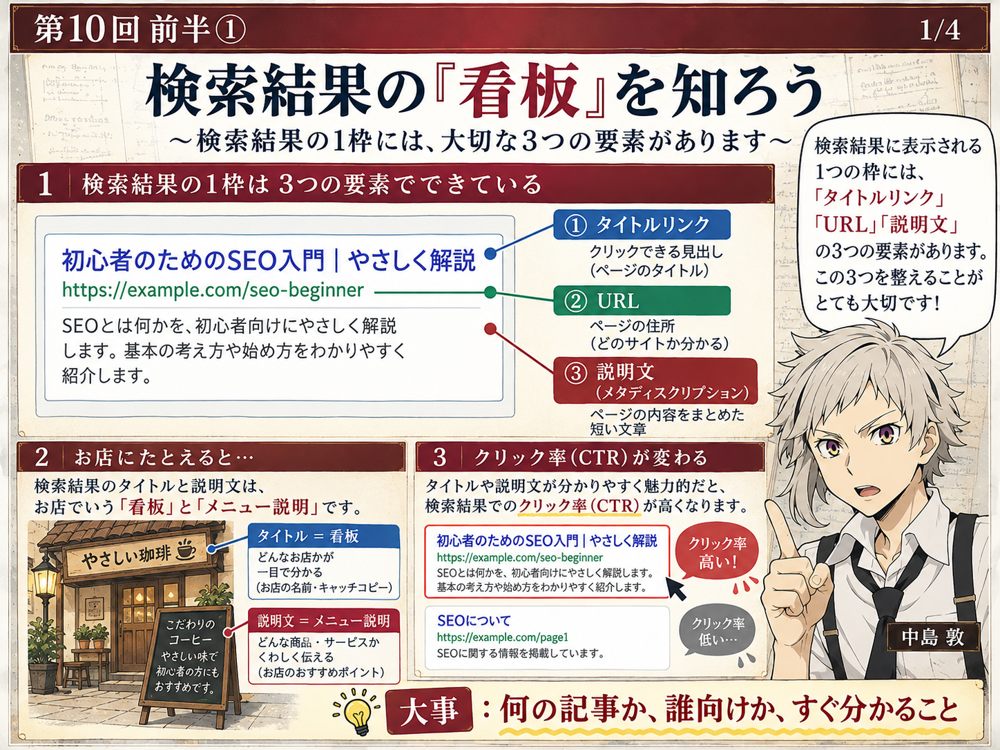
タイトルリンクは看板、説明文は一言メニューのような役割。
検索結果には、タイトル・URL・短い説明文が並びます。ここで「何の記事か」「読むと何が得られるか」が伝わらなければ、中身が良くてもクリックされません。
中島 敦「本文を読む前に、もう勝負が始まっているんですね。」
江戸川 乱歩「そう。検索結果は店の前。看板を見て入るかどうかが決まるんだよ。」
基本： タイトルは「何の記事か」、説明文は「誰向けで何が得られるか」を伝えます。
Day10前半②
タイトルで興味を引き、説明文でクリックする理由を作る
重要な言葉は前半へ。本文との一致を崩さない。
タイトル全角30文字前後を目安にし、重要キーワードを前半へ。
説明文悩み・読むメリットを早い位置に置く。
一致タイトル・説明文・本文で同じ約束をする。
国木田 独歩「煽るな。盛るな。内容に合う言葉を前に置け。」
泉 鏡花「“誰向けか”“何が分かるか”が早く見えると安心です。」
Day10前半③
2026年の検索結果は複雑化。順位だけでは実態が見えない
AI・画像・動画などが混ざるため、実際の画面を見る。
- AIオーバービューやAIモードで、上位でもクリックされにくい場合がある
- 画像・動画・各種検索機能が入り、検索結果の見た目は昔より複雑
- 順位だけでなく、表示回数・クリック数・実際の見え方をセットで確認する
坂口 安吾「順位だけ見て満足するな。現場は検索画面だ。」
中島 敦「何位かだけじゃなく、何が上に表示されているかも見るんですね。」
Day10前半④
改善は「意図確認 → 看板調整 → 実際の画面確認」の順
読者の検索意図から逆算して入口を調整する。
1探すCTRが低いページ
2確認検索意図
3直すタイトル前半
4補う説明文のメリット
5見る検索結果
江戸川 乱歩「全部を一気に直すより、“順位はあるのにクリックされない記事”から見ると効率がいい。」
中島 敦「原因が見える所から直すんですね。」
Day10前半⑤ / 実習1
noteやNotionでは「冒頭文」が検索結果の説明役になることがある
最初の文章を、検索結果から見ても分かる形へ。
第10回前半は、検索結果に表示される説明文と、記事の書き出しの関係を理解する実習です。まず自分の記事の冒頭約70文字を見て、「誰向けか」「読むとどうなるか」が早い段階で見えるか確認します。
Day10前半⑥ / 実習2
冒頭70文字を見直し、「誰向け・何が得られる」を前へ
スマホで途中までしか見えなくても意味が伝わるようにする。
誰向け初心者？経験者？
悩み何に困っている？
メリット読むとどうなる？
前半配置大事な語が後ろに逃げてない？
泉 鏡花「前置きだけが長いと、何の記事なのか分からなくなります。」
中島 敦「最初の70文字で、自分向けだと思ってもらうんですね。」
Day10前半⑦ / 実習3
修正ポイントは3つ。「誰向け」「どうなる」「盛っていない」
短く、具体的に、正直に。
- 対象読者をぼかさない
- 読むと得られる変化を短く入れる
- 本文とズレる誇張表現を使わない
- 重要な情報を前半に置く
坂口 安吾「格好つけるな。誰に何を渡す記事か、最初に言え。」
江戸川 乱歩「派手な釣り文句より、具体性と一致感の方が強いよ。」
Day10前半⑧ / 実習4
最後は「検索結果で伝わるか」を見て仕上げる
タイトル・説明文・冒頭文が同じ方向を向けば強い。
1冒頭70文字確認
2整理誰向け・メリット
3一致タイトルと本文
4表示スマホを想定
5保存入口完成
Day10前半のゴール：
自分の記事の冒頭約70文字を見直し、「誰向けか」「読むとどうなるか」がすぐ伝わる書き出しに整える。
DAY10 後半 / AI検索時代のSEO＋公開実習
AI検索時代でも土台はSEO。最後は「正しく公開」まで仕上げよう
Google検索はAIモードやAIオーバービューの強化で大きく変わっていますが、LLMO/GEOはSEOと別物ではなく、従来のSEOの延長線上にあります。小手先のAI対策より、一次情報・信頼性・ユーザー本位のサイト設計が重要です。
今日いちばん覚えること：
AI検索時代でも土台はSEO。信頼できる一次情報と、読者の次の疑問まで答える構造を磨く。
1SEO土台AI検索も延長線
2一次情報信頼を作る
3次の疑問情報をつなぐ
4点検公開前確認
5公開人に読まれる状態
Day10後半①
AI検索時代でも、LLMO/GEOはSEOの延長線上
AI専用の裏技より、まずはSEOの基本。
AIモードやAIオーバービューが強くなっても、GoogleはWeb上の情報を土台に答えを作ります。だから、LLMO/GEOだけを別物として考えるより、役に立つ内容・整理された構造・信頼できる情報を作ることが先です。
中島 敦「AI向けに全く別のSEOが必要なのかと思っていました。」
江戸川 乱歩「土台は同じ。良い情報を、AIにも人にも理解しやすくするんだよ。」
Day10後半②
比較・まとめだけより、一次情報と信頼を持つページが重要になる
AI時代ほど「本物の情報」が差になる。
2026年5月のコアアップデートでは、比較・まとめ系より、公式サイトやECサイトなど、実際の商品・サービスと結びついたページが評価されやすい流れが見られました。
強くなる材料： 実体験、写真、実測データ、公式情報、自社独自の説明、利用者の声など。
国木田 独歩「誰でも書ける一般論ではなく、根拠を持て。」
泉 鏡花「自分たちだから出せる情報を増やすのですね。」
Day10後半③
1キーワードだけでなく、「次に出る疑問」まで整理する
一つの疑問から広がる次の質問まで用意する。
- 読者が次に何を知りたくなるか考える
- 関連記事や関連ページへ自然につなぐ
- 画像・動画・商品情報なども必要に応じて整理する
- 1ページだけでなく、サイト全体で理解しやすくする
江戸川 乱歩「答えの次に生まれる質問まで先回りすると、AIにも読者にも親切だね。」
中島 敦「内部リンクの考え方ともつながりますね。」
Day10後半④
小手先のAI対策より、SEOの土台を磨く
信頼・構造・ユーザー本位が基本。
信頼一次情報・実体験・根拠を増やす。
構造見出し・内部リンク・情報整理を整える。
読者本位次の疑問まで答え、迷わせない。
坂口 安吾「AI用の魔法の言葉なんて探すな。中身と構造を磨け。」
国木田 独歩「SEOの基本を守る。それが結局、一番崩れにくい。」
Day10後半⑤ / 実習1
完成した記事を「人に読まれる状態」へ持っていく
書き終わりではなく、公開して確認するまでが実習。
第10回後半は、完成した記事を最終チェックし、noteまたはNotionで実際に公開する実習です。公開前に、タイトル・リード文・見出し・本文・まとめ・参考リンクを順番に確認します。
中島 敦「書き終わったら完成、ではないんですね。」
坂口 安吾「読める状態にして初めて完成だ。」
Day10後半⑥ / 実習2
公開前チェック：見出しは「大きい文字」ではなくH2・H3で設定する
見た目だけではなく、記事構造として正しく設定する。
タイトル内容と一致している？
リード誰向け・メリットが見える？
H2・H3正しい見出し設定？
本文誤字・重複・読みにくさはない？
まとめ結論が整理されている？
参考リンクリンク切れはない？
スマホ崩れてない？
公開設定URL・公開範囲はOK？
重要： 文字を大きくしただけでは見出しではありません。H2・H3として設定します。
Day10後半⑦ / 実習3
本文とリンクを整え、読者が迷わないようにする
本文・見出し・参考リンクを一つの流れとして見る。
- 見出しの下に、その見出しの答えが書かれているか
- 参考リンクが本当に必要な場所に置かれているか
- 公開後、関連する記事が増えたら内部リンクでつなぐ
- 「詳細はこちら」より、リンク先の内容が分かる言葉を使う
国木田 独歩「リンクは飾りではない。読者を次の情報へ案内するものだ。」
江戸川 乱歩「必要な所だけ、自然につなごう。」
Day10後半⑧ / 実習4
公開 → スマホ確認 → リンク確認 → URL共有までやって完成
人に読まれる状態まで持っていく。
1最終確認記事全体
2公開note / Notion
3スマホ表示確認
4リンク実際に開く
5共有URL投稿
Day10後半のゴール：
「書いて終わり」ではなく、正しく公開して、人に読まれる状態まで仕上げる。
DAY11 前半 / AI画像・図解・動画で記事を読みやすく
文字だけの記事から卒業して、「見て分かるコンテンツ」にしよう
画像・動画は、記事を読みやすくし、独自性や滞在時間を高める重要な要素です。AI画像生成を使えば、文章の内容に合った挿絵や図解を初心者でも作りやすくなります。
今日いちばん覚えること：
画像は飾りではなく「説明を助ける道具」。本文と関係のあるオリジナル画像を、軽く・分かりやすく使う。
1場所を決める文字が続く所
2本文を渡すAIへ文脈共有
32案作る別画像で生成
4記事へ入れるALTも書く
5確認する公開画面を見る
Day11前半①
画像・動画は、記事を「読みやすいコンテンツ」に変える
文字だけより、図解・写真・動画を組み合わせた方が理解しやすい。
文章だけが長く続くと、読者は疲れやすくなります。内容に合った図解やオリジナル画像があると、難しい説明を目で理解しやすくなり、記事を読む時間も伸びやすくなります。
中島 敦「画像って、ただ記事を派手にするためじゃないんですね。」
江戸川 乱歩「そう。文章だけで伝わりにくい所を、画像に手伝ってもらうんだ。」
初心者向けの考え方： 「ここ、文字だけだと分かりにくいな」と感じる場所に画像を置けばOKです。
Day11前半②
画像は「ファイル名・ALT・軽量化」の3つを忘れない
画像の中身が分かる名前を付け、説明文を書き、重くしすぎない。
ファイル名「IMG_1234.jpg」ではなく「camp-manner-guide.png」のように中身が分かる名前へ。
ALT画像が見えない場合にも内容が伝わるよう、短い説明を書く。
軽量化大容量画像をそのまま使わず、表示が重くならないよう圧縮する。
国木田 独歩「画像は貼って終わりではない。名前・説明・容量まで管理しろ。」
中島 敦「難しそうに見えますけど、確認するのは3つだけですね。」
Day11前半③
AI画像は、記事本文をそのまま渡すと作りやすい
ゼロから長いプロンプトを考えなくても、本文を渡せば文脈を使える。
- 挿絵を入れたい見出しと本文をAIへ渡す
- 水彩・フラット・漫画風など、スタイルを指定する
- 明るい・落ち着いた等、トーンを指定する
- 横長・縦長など、用途に合う比率を指定する
- 2案以上作り、気に入ったものを選ぶ
重要： 「複数案は1枚にまとめず、別々の画像ファイルで出す」「記事本文を画像内にそのまま書かない」と最初に指定します。
Day11前半④
AIは目的によって使い分ける。全部を1つに任せなくていい
アイキャッチ、写真風、ビジネス図解など、得意分野で使い分ける。
坂口 安吾「道具は信仰するものじゃない。用途に合わせて選べ。」
泉 鏡花「記事の雰囲気や読者に合う画像を選ぶことの方が大切です。」
Day11前半⑤
AI画像で失敗しやすい所を、先に知っておく
複数絵を1枚にまとめる、本文を画像に書く、重すぎる――この3つは避ける。
1枚1案複数の絵を1枚に詰め込まない
本文は入れない長文を画像へコピーしない
記事に合わせる量産型の見た目にしない
重くしない保存後に容量も確認する
判断基準： 「きれいか」より、「この画像があると本文を理解しやすいか」で選びます。
Day11前半⑥ / 実習1
文字だけで読みにくい場所を1つ決め、挿絵を2案作る
見出し＋本文を渡し、2案を別ファイルで生成する。
自分の記事を開き、文字が長く続いている場所を1つ選びます。その見出しと本文をAIへ渡して、内容に合う挿絵を2案作ってください。
AIへの指示例：
「この見出しと本文の内容を説明する挿絵を2案作ってください。2案は別々の画像にしてください。本文の文章は画像内に入れないでください。初心者にも意味が伝わるシンプルな図解・イラストにしてください。」
Day11前半⑦ / 実習2
気に入った画像を保存し、記事へ入れてALTとキャプションを書く
画像を入れただけで終わらず、読者と検索エンジンに意味を伝える。
1選ぶ2案から1枚
2保存分かる名前
3挿入note / Notion
4ALT画像の説明
5補足キャプション
国木田 独歩「画像名を“スクショ1”で終わらせるな。中身が分かる名前にしろ。」
中島 敦「ALTは、画像を見られない人にも内容が伝わる短い説明ですね。」
Day11前半⑧ / 実習3
最後は公開ページで「読みやすくなったか」を確認する
画像を入れた結果、文章の理解が早くなったかを確かめる。
位置本文の内容と合う場所にある？
見え方スマホでも大きすぎない？
説明ALT・キャプションはある？
効果文字だけより分かりやすい？
Day11前半のゴール：
記事本文の一部をAIへ渡して挿絵を2案作り、1枚を記事へ入れ、ALT・キャプション・公開画面まで確認する。
文字ばかりの記事を、AIで「見て分かる記事」へ改善できれば完成です。
DAY11 後半 / 情報を「構造」に直してから図解する
図解は絵のうまさではなく、「何を並べ、どう関係づけるか」で決まる
図解は、デザインセンスより情報の構造を整理することが重要です。まず要素を並べ、関係性を整理し、「結局何を伝えたいのか」という主張を文字で示してから、色やアイコンを整えます。
後半で覚えること：
文章 → 構造化 → 図解化。
AIにも文章を丸投げせず、先に3〜5個程度の要素へ整理してから渡すと、分かりやすい図になりやすくなります。
1選ぶ図に向く部分
2分ける3〜5要素
3整える順番・関係
4図にする矢印・区切り
5確認記事へ挿入
Day11後半①
図解は「おしゃれな絵」ではなく、情報を整理した図
色やアイコンより先に、何を並べ、どう分けるかを決める。
図解は、絵心の勝負ではありません。まず「同じ種類の情報」を並べ、「どこが同じで、どこが違うのか」を分けます。そのうえで、最後に読者へ伝えたい結論を文字で書けば、図の土台ができます。
中島 敦「図解って、絵がうまい人しか作れないと思っていました。」
江戸川 乱歩「逆だよ。まず情報を整理する。見た目はそのあとでいいんだ。」
超初心者向け： ノートに「何が3つある？」「何と何を比べる？」と書き出すだけでも、図解の準備になります。
Day11後半②
図解は「並べる → 関係を整理 → つなぐ → 主張を書く」の4ステップ
複雑な図も、まずは表のように整理して考える。
① 要素を並べる同じレベルの情報をそろえる。
② 関係を整理比較・分類・流れなどを決める。
③ 記号でつなぐ矢印・＋・＝・区切りを使う。
④ 主張を書く「だから何？」を一言で示す。
国木田 独歩「情報の種類を混ぜるな。同じ段には同じ粒度の情報を置け。」
中島 敦「表に整理してから図にすると、迷子になりにくいんですね。」
Day11後半③
AI図解ツールは「何を作りたいか」で使い分ける
シンプル図・比較表・テンプレ編集で、向いている道具が違う。
注意： 何でもAIに丸投げするより、「この図は比較」「これは手順」と人間が先に決めた方が早く、失敗も減ります。
Day11後半④
Canvaはテンプレートの「型」を壊さず、必要な所だけ変える
初心者ほど、レイアウトを大きく崩さず、文字・アイコン・色だけ整える。
- 内容に近い図解テンプレートを選ぶ
- 自分の記事の言葉へ置き換える
- アイコンを内容に合うものへ差し替える
- 色は増やしすぎず、記事の色に合わせる
- フォントや配置を増やしすぎない
泉 鏡花「全部作り直さなくても、型を借りればいいのですね。」
坂口 安吾「見た目をいじり倒す前に、中身を整えろ。それで十分だ。」
Day11後半⑤ / 実習1
まず「図解にしたい文章」を1つ選び、いったん文章から離れる
文章をそのまま絵にせず、構造へ変換してから図にする。
自分の記事から、図解にしたい見出しと本文を1つ選びます。向いているのは、手順・ポイントの数・比較・分類・時間の流れがある部分です。
1文章を選ぶ図に向く所
2Geminiへ3〜5要素化
3確認順番・抜け
4画像化矢印・区切り
5挿入記事で確認
Day11後半⑥ / 実習2
「手順・数・比較・分類・時間の流れ」があれば図解しやすい
何でも図にするのではなく、構造が見える内容を選ぶ。
手順1→2→3
ポイント3つ・5つ
比較AとBの違い
分類・時間グループ・時系列
図にしにくい例： 感情だけの話、抽象的すぎる話、情報が整理されていない文章。まず文章側を整理してから図解します。
Day11後半⑦ / 実習3
AIには長文ではなく「3〜5要素の構造」を渡す
AIに丸投げせず、人間が整理した骨組みを先に渡す。
Geminiへの指示例：
「次の文章を図解にしたいです。内容を3〜5個の要素に分けてください。各要素は同じレベル感にそろえ、必要なら『手順』『比較』『分類』『時間の流れ』のどれに当たるかも示してください。元の文章にない情報は追加しないでください。」
江戸川 乱歩「AIに渡す前に、骨組みを作る。ここが一番大事なんだ。」
中島 敦「文章を短い要素に分けてからなら、図の形も考えやすいです。」
Day11後半⑧ / 実習4
図解を記事へ入れ、「一瞬で意味が伝わるか」を確認して完成
見た目の派手さではなく、読者が本文を理解しやすくなったかを確認する。
整理要素が3〜5個？
関係矢印や区切りが自然？
主張結局何が大事か見える？
記事スマホでも読める？
Day11後半のゴール：
記事の文章をそのまま絵にせず、いったん構造へ整理し、AIで分かりやすい図解にして記事へ入れる。
図解は「絵のうまさ」より「情報の整理」が9割、と覚えておけばOKです。
DAY12 前半 / 2026.9.29 / AIライティング実践（ChatGPT活用）
AIは「代わりに考える人」ではなく、自分の材料を引き出して形にする相棒
AI活用では、人間がゼロから完璧なプロンプトを書くより、何をしたいか・背景・条件・出力形式・理想例を伝えて、AI自身にプロンプトを作らせ、対話で修正していく方が進めやすくなります。
今日の合言葉：
「自分の材料は人間が出す。整理・構成・言語化はAIに手伝ってもらう。」
note記事でも、失敗・感情・体験などの一次情報を先に掘り出してからAIへ渡します。
1目的何をしたい？
2材料体験・背景
3AIプロンプト作成
4対話ズレを修正
5人間最後に判断
Day12前半① / 超入門
AIは「超優秀だけど、空気を読まない指示待ちの新人」と考える
「いい感じに」だけではなく、目的と条件を言葉にする。
AIは知識が多くても、こちらの頭の中までは見えません。だから、PCが不安な人やAI初心者ほど、難しい言葉より「何をしてほしいか」を普通の言葉で具体的に伝えるのが近道です。
中島 敦「僕が曖昧なまま頼むと、AIもどこへ行けばいいか分からないんですね。」
国木田 独歩「その通りだ。目的・条件・完成形を渡せ。難しい呪文は要らん。」
まず覚えること： AIに空気を読ませようとせず、必要な情報を渡す。
Day12前半② / 基本
プロンプトは「役割・背景・指示・制約・形式・ゴール」の6つで考える
全部を毎回完璧に書く必要はない。足りない情報を整理するための型。
① 役割どんな立場で答える？
② 背景なぜ必要？どんな状況？
③ 指示具体的に何をする？
④ 制約文字数・禁止事項・対象者
⑤ 出力形式表・箇条書き・HTMLなど
⑥ 評価基準理想例・ゴールイメージ
泉 鏡花「6つ全部を暗記しなくても、抜けている情報を見つけるチェック表として使えばいい。」
中島 敦「見出しと箇条書きで渡すと、AIも読みやすそうです。」
Day12前半③ / いちばん楽な方法
プロンプトを自分でゼロから書かず、AIに「最高の指示書」を作ってもらう
やりたいことを説明 → AIにプロンプトを作らせる → 実行 → 対話で修正。
最初の頼み方はこれで十分：
「〇〇をしたいです。そのために必要な最高のプロンプトを作ってください。足りない情報があれば先に質問してください。」
江戸川 乱歩「プロンプトの専門家になる必要はないよ。AIに下書きを作らせて、違う所だけ直せばいい。」
中島 敦「1回で100点を狙うより、“ここが違います”と話しながら近づけるんですね。」
そのまま使える「指示出し見本テンプレート」
〇〇の部分を、自分の依頼内容に置き換えるだけでOK
使い方： まずこの型をAIへ渡し、〇〇だけ埋めます。全部を最初から完璧に書く必要はありません。
足りない情報はAIに質問してもらい、対話しながら直していけば大丈夫です。
# 役割
あなたは〇〇をするAIです。
## 目的
あなたの目的は、
「〇〇を達成すること」です。
## やること
- 〇〇
- 〇〇
- 〇〇
## 進め方
1. 依頼内容を理解する
2. 必要な情報を整理する
3. 最適な方法を考える
4. 成果物を作る
5. 内容を確認する
6. 完成版を出す
## 大切なルール
- 〇〇
- 〇〇
- 〇〇
- わからないことを勝手に作らない
- 必要なら確認してから進める
## 出力
ユーザーがすぐ使える完成形で出力してください。
必要に応じて、説明・手順・表・コード・具体例など、
目的に一番合う形式を選んでください。
## 最後の確認
回答する前に、
- 目的を達成できているか
- 間違いがないか
- 抜けている内容がないか
- わかりやすいか
- そのまま使えるか
を確認してください。
問題があれば直してから回答してください。
江戸川 乱歩「ゼロから長い指示文を考えなくていい。型を置いて、必要な所だけ埋めればいいんだよ。」
中島 敦「これなら“何をどう頼めばいいか分からない”ところから始められますね。」
Day12前半④ / note × 一次情報
note記事はAIに丸投げせず、「自分だけの体験」を先に掘り出す
AIは代筆者より、インタビュアーとして使う。
一般論だけの記事は似た内容になりやすくなります。そこで、失敗したこと、迷ったこと、当時どう感じたか、どんな順番で解決したかをAIに質問してもらい、自分の中にある材料を先に出します。
坂口 安吾「AIに“記事を書いて”で終わらせるな。“俺の体験を引き出す質問をしてくれ”と頼め。」
中島 敦「材料は自分、整理と構成はAI。役割を分けるんですね。」
一次情報の例： 失敗・葛藤・実際に試した手順・数字・当時の感情・自分なりの気づき。
Day12前半⑤ / 実習1
今日は「書く側」から「読む側」に回る。評価ではなく、良い工夫を探す
点数を付ける時間ではなく、自分の制作に持ち帰れるヒントを探す。
「直すところ探し」ではありません。「この書き出しは読みやすい」「この図解は分かりやすい」など、良いと思った理由を1つ言葉にしてみます。
中島 敦「上手い・下手を決めるんじゃなくて、“何が良かったか”を見るんですね。」
江戸川 乱歩「そう。盗むんじゃない。“使える工夫”を発見するんだ。」
Day12前半⑥ / 実習2
まずシェアボードとおすすめ投稿フォームを開いて準備する
先に必要なページを開いておくと迷いにくい。
まだ記事が完成していない人： まず制作を続け、完成したらPadletへ投稿すればOKです。
Day12前半⑦ / 実習3
タイトルとアイキャッチを眺めて、気になった記事を5本ほど読む
全部を読む必要はない。直感で気になった記事から読む。
タイトル続きが気になる？
アイキャッチ目が止まる？
本文読みやすい工夫は？
体験・図解印象に残った所は？
泉 鏡花「5本全部を細かく分析しなくていい。まず“気になった理由”を見つける。」
中島 敦「自分の記事に取り入れられそうな工夫を1つ持ち帰ればいいんですね。」
Day12前半⑧ / 実習4・完成
2〜3本に「良かった点」をコメントし、特に良かった1本をおすすめ投稿する
短くても、「どこが良かったか」が1つ伝われば十分。
コメント例：
・書き出しの一文で、すぐ続きが読みたくなりました。
・見出しを読むだけで、内容が分かりやすかったです。
・体験談が入っていて、場面が目に浮かびました。
・図解のおかげで、手順がすっと頭に入りました。
1読む5本ほど
2発見良い工夫
3コメント2〜3本
4おすすめ1本を選ぶ
5持ち帰る自分の記事へ
Day12前半のゴール：
AIを「自分の材料を引き出して整理する相棒」として使いながら、他の受講生の記事から良い工夫を見つけ、言葉にして自分の制作へ持ち帰る。